ETC3460 - Financial Econometrics
1 Unit guide summary
1.1 Synopsis
The specification, estimation and testing of asset pricing models, including the capital asset pricing model and extensions; the statistical characteristics of financial data emphasising skewness, kurtosis and volatility aspects; volatility models such as ARCH models of financial time series, with applications to stock prices, derivatives, and exchange rates including the forecast performance of these models.
1.2 Assessment summary
| Assessment task | Value | Due date |
|---|---|---|
| Written assessment 1 | 15% | Week 6 |
| Written assessment 2 | 15% | Week 12 |
| Group assignment | 10% | Week 11, 12 |
| Final examination | 60% | TBA |
1.3 Unit schedule
| Week | Topic |
|---|---|
| 1 | Background statistics |
| 2 | Returns and their statistical properties |
| 3 | Modelling returns |
| 4 | Asset pricing I |
| 5 | Asset pricing II |
| 6 | Efficient market hypothesis |
| 7 | Modelling predictable returns |
| 8 | Introduction to volatility modelling |
| 9 | ARCH model |
| 10 | Testing for ARCH effects |
| 11 | GARCH modelling and extensions |
| 12 | Presentations and unit review |
2 Lectures
2.1 Lecture 1
2.1.1 Topic outlines
| Topic | Lecturer |
|---|---|
| Basic statistics and probability | David Frazier |
| Asset Pricing I | David Frazier |
| Asset Pricing II | David Frazier |
| Modelling predictable returns | David Frazier |
| Modelling asset volatility | David Frazier |
| Revision lectures | David Frazier |
2.1.2 Motivation and overview
Financial econometrics is about making decisions in terms of investments and how to maximise the returns of those investments
- How do you model exchange rates?
- How do you predict the future value of assets based on the vast volumes of data available?
Why is this possible with financial data? Financial data exhibits "universally agreed upon behaviours" (Cont, 2000), including:
- Heavy tailed distributions
- Asymmetrical distributions
- Lack of persistence in returns
- Volatility clustering
2.2 Lecture 2 - Probability and statistics review
2.2.1 General notes
For more information on this topic see Kevin Sheppard's notes.
2.2.2 Terminology review
A random variable is a phenomena that cannot be predicted with perfect accuracy.
A sample space, often denoted \(\Omega\), is the set of all possible values that a random variable may take.
An event \(\omega\) is a subset of the sample space. The set of all events in the sample space \(\Omega\) is called the event space and often denoted \(\mathcal{F}\). We can assign probabilities to events using functions that satisfy the probability axioms. Lastly the set of all posible events is called the power set and often denoted \(2^\Omega\).
2.2.3 Discrete and continuous random variables
A random variable is essentially a map \(X:\Omega \rightarrow \mathbb{R}\) that takes an element in the sample space to a number on the real line.
A discrete random variable is a random variable for which the cardinality of \(\Omega\) is finite or countably infinite. Conversely, a continuous random variable may have \(\Omega\) with uncountable cardinality.
For continuous random variables the probability of drawing a particular outcome is zero since there are uncountably many possibilities. We can only assign probabilities to subsets of \(\Omega\).
2.2.4 Questions
Suppose \(X:\Omega \rightarrow \mathbb{R}\) is a random variable. What does \(X(\omega)\) represent?
The random variable is a map from the sample space \(\Omega\) to a real number representing the mass in the case of discrete random variables and the density in the case of continuous random variables. We choose \(\mathbb{R}\) as the codomain instead of \([0,1]\) since for continuous random variables the density is often greater than 1. For example let \(X:[0, \frac{1}{2}] \rightarrow \mathbb{R}\) be the continuous random variable over the interval \([0, \frac{1}{2}]\).
\[ X(x) = \frac{1}{1 - \frac{1}{2}} = 2 \]
Why do we often use log returns instead of unscaled returns?
First we might answer why we use returns instead of the absolute changes in prices. Suppose we have a large bank stock that increases from $500 to $510. Given the size of the stock this is a relatively small move. However assume instead we saw the same $10 upward move in a stock previously trading for $10. In that case it represents a doubling in the value of the stock (!). Using returns provides normalisation between assets and allows us to compare the rescaled magnitude of moves rather than their absolute value.
The motivation for using log returns involves a number of points. More information can also be found on the blog post Why log returns? by Quantivity.
- Log-normality
It's a common assumption that returns are approximately log-normally distributed. When working with log returns we therefore have normally distributed values.
- Time additivity
When calculating cumulative returns we can simply add returns instead of multiplying them together. This has the benefit that the sum of normals is also normal and we have improved numerical stability since multiplication of small numbers can be problematic.
- Approximate raw-log equality
For values close to zero, log returns approximate regular returns. Concretely for \(r \ll 1\)
\[ \log(1+r) \approx r \]
Some more information for why this occurs can be found on this stackoverflow post.
2.3 Lecture 3 - Probability and statistics review
2.3.1 Continuous random variables
A random variable \(X:\mathbb{R} \rightarrow \mathbb{R}\) is continuous if it is weakly positive (i.e. \(X(\omega) \geq 0\)) and if the integral over the full sample space is equal to 1 (i.e. \(\int_{\Omega} X(\omega) d \omega = 1\)).
The function that maps from the sample space \(\Omega\) to \(\mathbb{R}\) is called the probability density function or pdf. Continuous variables also have an un-countably infinite number of elements in their range \(\Omega\).
2.3.2 Normality of asset returns
We will come to see that asset returns are only conditionally normal (given their recent history). Unconditionally, we cannot use CLT or normality assumption in our asset returns since this is likely to be violated. Here we look at the distribution of standardised monthly returns on the SP500 compared to a standard normal \(\mathcal{N}(0,1)\).
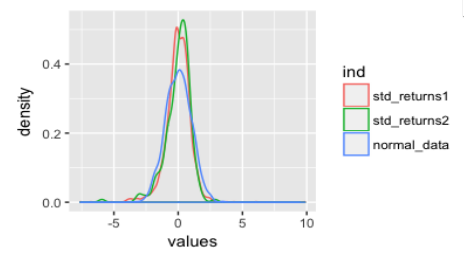
We see that there is excess probability mass in the tails of the returns of the green line (1870-2015) and the red line (2000-2015). These thicker tails compared to the normal are indicative of positive excess kurtosis, which we will see is the fourth normalised moment of the distribution.
Dispite the central limit theorem (sample averages approximate a normal asymptotically), even monthly returns for SP500 over a very long time frame fail to approach a normal distribution.
2.3.3 Raw, central and normalised moments
Concretely, the \(k\) -th moment of a random variable \(X\) is denoted \(\mu_k\) and equal to
\[ \mu_k = \mathbb{E}[X^k] \]
Since this expectation is affected by the level and spread of the distribution, we may also be interested in \(\bar{\mu}_k\) the \(k\) -th central moment \(\bar{\mu}_k\)
\[ \bar{\mu}_k = \mathbb{E}[(X - \mu_1)^k] \]
or the \(k\) -th normalised moment \(\bar{\mu}_k^s\)
\[ \bar{\mu}_k^s = \mathbb{E} \left [ \left (\frac{X - \mu_1}{\sqrt{\bar{\mu}_2}} \right)^k \right ] \]
There are some familar names for the first few moments of a distribution. Below we show these along with some analogous financial concepts.
| \(k\) | Raw moment | Central moment | Normalised moment | Financial interpretation |
|---|---|---|---|---|
| 1 | Mean | - | - | Average return |
| 2 | - | Variance | - | Risk |
| 3 | - | - | Skewness | Whether extreme returns are above or below the average |
| 4 | - | - | Kurtosis | Likelihood of extreme returns |
2.3.4 Questions
What is equidispersion?
A distribution of a random variable \(X\) is said to exhibit equidispersion when
\[ \mathbb{E}[X] = \mathbb{V}(X) \]
An examples of a distribution that has equidispersion is the Poisson distribution since if \(X \sim \mathcal{P}(\lambda)\) then \(\mathbb{E}[X] = \lambda = \mathbb{V}(X)\). Simply, the mean and variance are equal.
What is excess kurtosis? How does it differ from kurtosis?
Raw kurtosis is difficult to interpret when we have nothing to compare it to. A common solution to this is excess kurtosis which compares the kurtosis of a distribution with that of a standard normal. Excess kurtosis is equal to \(\bar{\mu}_k^s - 3\), since a standard normal has raw kurtosis of 3.
Positive excess kurtosis indicates that a distribution tends to have thicker tails than a standard normal (leptokurtic) and therefore is more likely to have extreme values and negative excess kurtosis indicates thinner tails (platykurtic) and is less likely to have extreme values.
2.4 Lecture 4 - Multivariate distributions
2.4.1 Sample skewness
We can estimate the third standardised moment \(\hat{\mu}^s_3\) or skewness by
\[ \hat{\mu}^s_3 = \frac{1}{T} \sum_{i=1}^T \left ( \frac{r_t - \bar{r}}{s} \right )^3 \]
Skewness tells us nothing about the magnitude or likelihood of positive or negative events. If skewness is positive then we have right skew and if it is negative we have left skew.
2.4.2 Sample kurtosis
We can estimate the four standardised moment \(\hat{\mu}^s_3\) or kurtosis by
\[ \hat{\mu}^s_4 = \frac{1}{T} \sum_{i=1}^T \left ( \frac{r_t - \bar{r}}{s} \right )^4 \]
We use the kurtosis of the standard normal distribution as a benchmark for kurtosis. We call this adjusted value excess kurtosis.
\[ \text{Excess kurtosis} = \text{Kurtosis} - 3 \]
Positive excess kurtosis indicates that the tails of a distribution are thicker than that of a normal. Negative excess kurtosis indicates thinner tails (e.g. binomial distribution).
2.4.3 Joint distributions
Similar to the definitions we've given for continuous univariate random variables (weakly positive and integrates to 1), a multivariate random variables is defined as follows Let \((\Omega, \mathcal{F}, \mathbb{P})\) be a probability space, then \(X:\Omega \to \mathbb{R}^n\) is an \(n\) dimensional random variable. We say \(X\) is continuous if:
- Its range \(R(X)\) is uncountably infinite
- \(X\) is weakly positive, i.e. \[ \mathbb{P}(\omega) = \int \cdots \int_{(x_1, \ldots, x_n) \in \omega} f(x_1, \ldots, x_n) \, dx_1 \, \cdots \, dx_n \geq 0 \text{, for all } \omega \in \Omega \]
- Events outside of the range have probability zero \[ \mathbb{P}(\omega') = \int \cdots \int_{(x_1, \ldots, x_n) \in \omega'} f(x_1, \ldots, x_n) \, dx_1 \, \cdots \, dx_n = 0 \text{, for all } \omega' \in \bar{\Omega} \]
- The sample space integrates to 1 \[ \mathbb{P}(\Omega) = \int \cdots \int_{(x_1, \ldots, x_n) \in \Omega} f(x_1, \ldots, x_n) \, dx_1 \, \cdots \, dx_n = 1 \]
Here \(f:\mathbb{R}^n \to \mathbb{R}\) is a multivariate probability density function (pdf) which is said to describe the joint distribution between the \(n\) random variables.
For example, let \(X_1, X_2\) be normal distributions with means \(\mu_1, \mu_2\) and variances \(\sigma_1^2, \sigma_2^2\). Then the vector \(\mathbf{X} = (X_1, X_2)^{\prime}\) is bivariate normal with correlation \(\rho\) iff
\[ f(x_1, x_2) = \frac{1}{2\pi \sigma_1 \sigma_2 \sqrt{1 - \rho^2}} \times \exp \left ( -\frac{1}{2 \sqrt{1 - \rho^2}} \left [\frac{(x_1 - \mu_1)^2}{\sigma_1} + \frac{(x_2 - \mu_2)^2}{\sigma_2} - \frac{2 \rho (x_1 - \mu_1)(x_2 - \mu_2)}{\sigma_1 \sigma_2} \right ] \right ) \]
We can "recover" the marginal distributions for the individual random variables by integrating over the other random variables. For example in the bivariate case above, we can obtain the marginal pdf for \(X_1\) by
\[ f(x_1) = \int_{-\infty}^{\infty} f(x_1, x_2) \, dx_2 \]
2.4.4 Conditional relationship between bivariate normal distributions
Let \(\mathbf{X} = (X_1, X_2)^{\prime}\) be a bivariate normal distribution
\[ \mathbf{X} \sim \mathcal{N} \left (\begin{pmatrix}\mu_1 \\ \mu_2 \end{pmatrix}, \begin{bmatrix}\sigma_{11}^2 & \sigma_{12} \\ \sigma_{21} & \sigma_{22}^2\end{bmatrix} \right ) \]
we also note that we could write the covariance matrix as
\[ \begin{bmatrix}\sigma_{1}^2 & \rho \sigma_1 \sigma_2 \\ \rho \sigma_1 \sigma_2 & \sigma_2^2 \end{bmatrix} \]
where
\[ \rho = \frac{\sigma_{12}}{\sigma_1 \sigma_2} = \frac{\sigma_{12}}{\sqrt{\sigma_{11}^2 \sigma_{22}^2}} \]
Often we are interested in conditional distributions in the context of financial econometrics. Suppose we are interested in the distribution of \(X_1\) given \(X_2 = x_2\). We find that this is also normally distributed, specifically
\[ f(X_1 \, | \, X_2 = x_2) \sim \mathcal{N} \left ( \mu_1 + \rho \frac{\sigma_{11}}{\sigma_{22}}(x_2 - \mu_2), \, \sigma_{11}^2 (1 - \rho^2) \right ) \]
If we look closely, this is fairly straightforward. Marginally, \(X_1\) would have a mean of \(\mu_2\) but we adjust it since we know that \(X_1\) and \(X_2\) are correlated with correlation \(\rho\). We calculate how far \(x_2\) is from its mean \(\mu_2\) and rescale that using \(\frac{\sigma_{11}}{\sigma_{22}}\) and finally multiple by \(\rho\), the strength of this correlation. We adjust the unconditional variance \(\sigma_{11}^2\) by the strength of the correlation also. For very strength correlation (\(\mid \rho \mid \gtrapprox 0.7\)) we should shrink the variance by half, while for very low correlation (\(\mid \rho \mid \lessapprox 0.2\)) we would only shrink it by 5%.
Understanding this relationship is critical.
2.4.5 Conditional expectations
A conditional expectation is simply an expectation in which we integrate over the conditionally distribution rather than the marginal distribution.
For example,
\[ \mathbb{E}[X_1 \, | \, X_2 = x_2] = \int x_1 f(x_1 \, | \, X_2 = x_2) \, dx_1 \]
2.4.6 Relationship between simple linear regression and bivariate normals
Let's walk through a simple derivation of the values of the coefficients in simple linear regression. We want to find parameters that minimize the sum of squared errors. That is,
\[ \begin{array}{rcl} \displaystyle J(\hat{\beta}_0, \hat{\beta}_1) &=& \displaystyle \sum_{i=1}^n(y_i - \hat{\beta}_0 - \hat{\beta}_1 x_i)^2 \\ \displaystyle \frac{\partial J}{\partial \hat{\beta}_0} &=& \displaystyle 2 \sum_{i=1}^n(y_i - \hat{\beta}_0 - \hat{\beta}_1 x_i)(-1) = 0 \\ &=& \displaystyle \sum_{i=1}^n(y_i - \hat{\beta}_0 - \hat{\beta}_1 x_i) = 0 \\ n \hat{\beta}_0 &=& \displaystyle \sum_{i=1}^n y_i - \hat{\beta}_1 \sum_{i=1}^n x_i \\ \therefore \hat{\beta}_0 &=& \displaystyle \frac{1}{n} \sum_{i=1}^n y_i - \hat{\beta}_1 \frac{1}{n} \sum_{i=1}^n x_i = \bar{y} - \hat{\beta}_1 \bar{x} \\ \end{array} \]
Skipping some substitution we can also derive that
\[ \displaystyle \hat{\beta}_1 = \displaystyle \frac{\sigma_{12}}{\sigma_{x}^2} \]
Rewriting our predictions we reach a familiar form
\[ \begin{array}{rcl} \hat{y}_i &=& \hat{\beta}_0 + \hat{\beta}_1 z_i \\ &=& \bar{y} + \hat{\beta}_1 (z_i - \bar{z}) \\ &=& \hat{\mu}_y + \frac{\hat{\sigma}_{12}}{\hat{\sigma}_z^2} (z_i - \hat{\mu}_z) \\ &=& \hat{\mu}_y + \hat{\rho} \frac{\hat{\sigma}_y}{\hat{\sigma}_z} (z_i - \hat{\mu}_z) \\ \end{array} \]
with
\[ \hat{\rho} = \frac{\hat{\sigma}_{yz}}{\sqrt{\hat{\sigma}_y^2 \hat{\sigma}_z^2}} \]
and therefore we end up with a bivariate normal. This comes directly as a result of the assumptions made in linear regression. This is an important consideration to make in the context of finance since we often work with non-normal distributions, so we should be cautious when making this assumption unknowingly.
2.4.7 Law of iterated expectations
Let \(\mathbf{X} = (X_1, X_2)^{\prime}\) be a bivariate distribution with pdf \(f(x_1, x_2)\) and marginal pdfs \(f_1(x_1)\) and \(f_2(x_2)\). Then the law of iterated expectations states that
\[ \mathbb{E}[g(X_1)] = \mathbb{E}_{X_2}[ \mathbb{E}_{X_1}[g(X_1) | X_2 = x_2] ] \]
The "inner" expectation is made with respect to \(X_1\) while the "outer" expectation is made with respect to \(X_2\). This shows that we can work the conditional and marginal distributions and avoid the joint distribution (which is often more difficult to model).
2.4.8 Law of total variance
Conditional variance is defined in the same way as normal variance. That is the expected squared distance from the averaged. Concretely, this look like
\[ \mathbb{V}(Y | X) = \mathbb{E}[(Y - \mathbb{E}[Y|X])^2 | X] \]
Using some algebra, we can show that
\[ \begin{array}{rcl} \mathbb{V}(Y) &=& \mathbb{E}[Y^2] - \mathbb{E}[Y]^2 \\ &=& \mathbb{E}[\mathbb{E}[Y^2|X]] - \mathbb{E}[\mathbb{E}[Y|X]]^2 \\ &=& \mathbb{E}[\mathbb{V}(Y|X) + \mathbb{E}[Y|X]^2] - \mathbb{E}[\mathbb{E}[Y|X]]^2 \\ &=& \mathbb{E}[\mathbb{V}(Y|X)] + \mathbb{E}[\mathbb{E}[Y|X]^2] - \mathbb{E}[\mathbb{E}[Y|X]]^2 \\ &=& \mathbb{E}[\mathbb{V}(Y|X)] + \mathbb{V}(\mathbb{E}[Y|X]) \\ \end{array} \]
This is the law of total variance.
2.5 Lecture 5 - Financial assets and returns
2.5.1 Fixed-income securities and equities
Fixed-income products are designed as a lump sum payment at some future date, sometimes combined with coupon payments (interest payments) paid out at regular intervals. Equities on the other hand are shares or stakes in a company and therefore a claim on the assets and future cashflows of a firm. Both of these can be traded, although typically equities are more often traded on exchanges while fixed-income is usually traded over the counter (OTC) between parties.
2.5.2 Returns
We generally work with three different types of returns. Net, gross and log returns. Net returns (commonly denoted \(R_t\)) is the percentage change over a period. The net return over the period from \(t-1\) to \(t\) can be simply found by
\[ R_t = \frac{P_t - P_{t-1}}{P_{t-1}} \]
Gross returns are simply the multiple corresponding to the percentage change
\[ 1 + R_t = 1 + \frac{P_t - P_{t-1}}{P_{t-1}} = \frac{P_t}{P{t-1}} \]
Gross returns are multiplicative, meaning that if we have the gross returns for each step over a period we can multiply them together to get the multi-period return for that period.
\[ \begin{array}{rcl} R_t(k) &=& \displaystyle \frac{P_t}{P_{t-k}} -1 \\ &=& (1+R_t) \times (1+R_{t-1}) \times \cdots \times (1+R_{t-k+1}) \\ &=& \displaystyle \prod_{j=0}^{k-1} (1 + R_{t-j}) - 1 \\ \end{array} \]
Lastly, continuously compounded returns or log returns are equal to the log of gross returns
\[ r_t = \log(1+R_t) \]
Log returns have the benefit of being additive. The \(k\) period log return is simply equal to
\[ \begin{array}{rcl} r_t(k) &=& \log(1 + R_t(k)) \\ &=& \log [ (1+R_t) \times (1+R_{t-1}) \times \cdots \times (1+R_{t-k+1}) ] \\ &=& \log (1+R_t) + \log(1+R_{t-1}) + \cdots + \log(1+R_{t-k+1}) \\ &=& r_t + r_{t-1} + \cdots + r_{t-k+1} \\ &=& \displaystyle \sum_{j=0}^{k-1} r_{t-j} \\ \end{array} \]
2.5.3 Dividends
Dividends are the payments received when companies distribution earnings to shareholders. Usually this is expressed as a dividend yield, which is quoted as a percentage of the market price of the share.
Since these payments are made when holding the asset (share), we need to incorporate them into our returns. Say we receive a dividend between time \(t-1\) and \(t\), we denote this \(D_t\) and our gross return becomes
\[ 1 + R_t = \frac{P_t + D_t}{P_{t-1}} = \frac{P_t}{P_{t-1}} + \frac{D_t}{P_{t-1}} \]
2.5.4 Interconnectedness of indicies
An index is a aggregation of the value of a number of stocks in a particular market. They give a general idea of the performance of the market as whole, averaging out the performance of any particular constituent.
Typically they are constructed in one of two ways:
- Price-weighted indices The total capital invested into each share is proportional to the price of the share
- Value-weight indices The total capital invested into each share is proportional to the total market capitalisation (value of outstanding equity)
Often we will see that global indices are highly correlated. The top six indices of interest in this class are:
- SP500
- Dow Jones (DJ)
- Han Seng (HSI)
- Nikkei 225
- Deutsche Aktien (DAX)
- FTSE
2.5.5 Questions
What is Jensen's inequality?
Jensen's inequality provides a useful relationship between the expected value of some random variable \(X\) and some convex function \(g(x)\). An example proof can be found here.
\[ \mathbb{E}[g(x)] \geq g(\mathbb{E}[x]) \text{, for a convex function } g \]
2.6 TODO Lecture 6 - Risk aversion and simple models of returns
2.6.1 Measuring co-movement of assets
Generally one aspect to be considered when choosing a portfolio of assets is the amount of co-movement. If all of our assets tend to move in the same direction then that is great when times are good but it also means that downfalls tend to be exaggerated. Depending on our appetite for risk we may instead seek assets that tend to move against each other in sharp down turns.
The typical method for estimating how assets move together is covariance or the standardised version correlation. These sample version of these quantities can be estimated by
\[ \widehat{\text{Cov}}(X_1, X_2) = \frac{1}{n} \sum_{t=1}^n [(X_{1t} - \bar{X}_1)(X_{2t} - \bar{X}_2)] \]
\[ \widehat{\text{Corr}}(X_1, X_2) = \frac{\widehat{\text{Cov}}(X_1, X_2)}{s_1 s_2} \]
where \(s_1\) and \(s_2\) are the sample variances for \(X_1\) and \(X_2\) respectively.
2.6.2 Risk aversion
Risk aversion is the behavior of individuals who when exposed to uncertainty, attempt to lower that uncertainty. This implies generally that investors must bear more risk in order to earn greater returns. We tend to see this in historical asset returns. Assets with higher average returns in the long run tend also to exhibit greater volatility. Investors will only ever invest in an asset if they believe than over their time horizon they are more likely to realise a positive return than a negative return.
N.B. it is never guaranteed that investors will actually realise a greater return when taking on more risk, only that there is a possibility of a higher rate of return compared to a less risky asset.
This then summarises the risk-return trade-off. There is a positive relationship between risk and expected the return of an asset. Further, it is extremely difficult to outperform even random selections of stocks (Fama, 1965).
2.6.3 Normality of net and log returns
We introduce two very naive models of returns.
For the first model we assume that net returns are normally distributed.
\[ R_t \overset{\text{i.i.d.}}{\sim} \mathcal{N}(\mu, \sigma^2) \]
However there are a few problems with this model:
- Negative returns in reality are bounded by the value of the asset (usually)
- This doesn't tend to match the empirical return distributions for many instruments
For the second model we assume that log returns are normally distributed.
\[ r_t = \log(1 + R_t) \overset{\text{i.i.d.}}{\sim} \mathcal{N}(\mu, \sigma^2) \]
A few more notes about this model:
- This tends to be closer to empirical return distributions
Using the second model, this then implies that the sum of \(k\) returns is also normally distributed (since this is simply the sum of normals)
\[ \log(1 + R_t(k)) = \mathcal{N}(k \mu, k \sigma^2) \]
By simple manipulations of random variables we can find the probabilities of being below a threshold in the following fashion
\[ \mathbb{P}(\log(1+R_t(k)) < x) = \mathbb{P} \left ( Z < \frac{\log(x) - k \mu}{\sqrt{k \sigma^2}} \right ) \]
with \(Z \sim \mathcal{N}(0,1)\).
2.6.4 TODO Geometric random walk
- Future returns are independent of the past, there is no way to predict the future
2.6.5 TODO Questions
What types of relationships does correlation measure?
Correlation measures the strength of linear relationships between random variables. It is possible that non-linear relationships are not found when looking at simple correlation.
Download the time series for IBM and BHP.
- Calculate the sample correlation of the prices
- Calculate the sample correlation of the returns
- Calculate the sample correlation of the squared returns
What do you notice?
Suppose the \(\text{log}(1 + R_t) \sim \mathcal{N}(\mu, \sigma^2)\). How does the mean, variance, skewness and kurtosis change for
- 1 period return
- 5 period returns
- 25 period returns
- 100 period returns
What is a qq-plot?
A qq-plot compares the similarity of two distributions by plotting their quantiles against each other. They are very often used to compare a candidate distribution against a normal distribution.
normal_draws <- rnorm(1000) qqnorm(normal_draws)
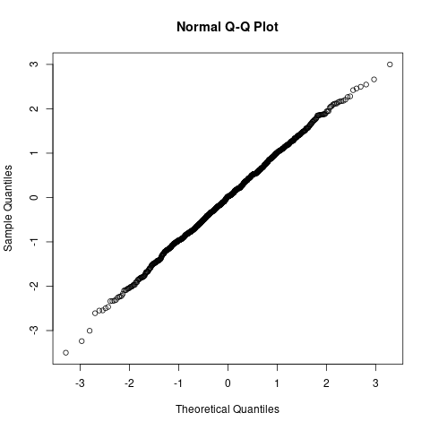
Since these are indeed draws from a normal distribution we see the quantiles are strongly correlated. Let's compare it with a distribution with fatter tails, a t-distribution with 3 degrees of freedom.
t_draws <- rt(1000, df=3) qqnorm(t_draws)
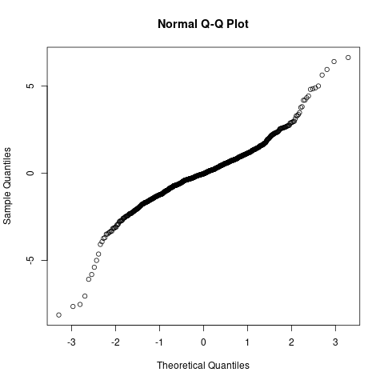
2.7 PROGRESS Lecture 7 - Forming sensible portfolios
2.7.1 Portfolio with one risky asset
Given a risky asset \(R\) and a risk-free asset \(R_f\), a portfolio with weight \(w\) on the risky asset has a return of
\[ R_p = w R + (1-w) R_f \]
Given this, we can calculate the first two moments of the portfolio returns also
\begin{array}{rcl} \mathbb{E}[R_p] &=& w \mu + (1-w) \mu_f \\ \mathbb{V}(R_p) &=& w^2 \sigma^2 \\ \end{array}Note that we have no covariance term since the variance of \(R_f\) is zero (i.e. it is risk-free). We can therefore choose a suitable \(w\) based on the desires of the investor. We can pin this one of two ways.
- Specify the desired rate of return
- Specify the desired level of risk
2.7.2 Portfolio with two risky assets
Suppose instead that we have two risky assets to form a portfolio from, \(R_1\) and \(R_2\). Again we assign a weight of \(w\) to the first asset. The returns on the portfolio are
\[ R_p = w R_1 + (1-w) R_2 \]
Given this, we can calculate the first two moments of the portfolio returns also
\begin{array}{rcl} \mathbb{E}[R_p] &=& w \mu_1 + (1-w) \mu_2 \\ \mathbb{V}(R_p) &=& w^2 \sigma^2_1 + (1-w)^2 \sigma^2_2 + 2 w (1-w) \text{Cov}(R_1, R_2) \\ \end{array}Now things get a bit more involved since we have two variance terms and a covariance term to deal with. Suppose we wish to find the portfolio (defined by \(w\)) that minimises risk.
\[ \underset{w \in [0,1]}{\text{min}} \sigma^2_{R_p} \]
We can solve this by taking the derivative of the variance of the portfolio returns with respect to \(w\).
\[ \begin{array}{rcl} \displaystyle \frac{d \sigma^2_{R_p}}{dw} &=& 2w\sigma^2_1 - 2(1-w) \sigma^2_2 + 2(1-w)\sigma_{12} - 2w\sigma_{12} = 0 \\ &=& \cdots \\ \therefore \hat{w} &=& \displaystyle \frac{\sigma^2_2 - \sigma_{12}}{\sigma^2_1 + \sigma^2_2 - 2\sigma_{12}} \\ \end{array} \]
where \(\sigma_{12} = \text{Cov}(R_1, R_2)\). This can be verified by taking the second derivative to ensure that the stationary point is a minimum.
2.7.3 Connection with OLS
Let \(X = R_2 - R_1\) and \(Y = R_2\). Then
\[ \begin{array}{rcl} \text{Cov}(Y, X) &=& \sigma^2_2 - \sigma_{12} \\ \mathbb{V}(X) &=& \sigma^2_1 + \sigma^2_2 - 2\sigma_{12} \\ \end{array} \]
Therefore we see that the optimal allocation seen previously can be found using OLS, where the weight \(w\) is the coefficient on \(X\) (the "covariate").
2.7.4 PROGRESS Questions
What is the equity premium puzzle?
Stocks have tended to outperform government bonds in excess of the increase in risk from holding stocks. This pattern has been observed in numerous markets, and has no solid explanation at the present. More information can be found here.
What is the capital market line? How does it relate to the Sharpe ratio and the efficient frontier?
The capital market line gives the expected return for a given level of risk when optimally investing in the market portfolio and a risk-free asset.
\[ \mu_{R_p} = \mathbb{E}[R_p] = \mu_f + (\mu_R - \mu_f) \frac{\sigma_{R_p}}{\sigma_R} \]
As \(\mu_R > \mu_f\) for any reasonable investment, we see that we expect returns to increases linearly as we take on more risk (\(\sigma_{R_p}\)).
What is lagrangian optimisation portfolio?
2.8 Lecture 8 - CAPM
2.8.1 Rationale of CAPM
While the CML relates the market portfolio and a risk-free asset, telling you the expected return for a specific level of risk, CAPM builds upon this idea but expresses the risk relative to the rest of the market. Specifically it relates the excess returns on an asset to the excess returns of the market. One reason that we may want to phrase the portfolio construction in this way is since investing in the market already provides some level of returns (as seen in the CML), therefore we wish to see performance in excess of the market in order to invest in an individual asset as opposed to an index. Risk is now measured in terms of the correlation with the market returns.
We can fit model this as a linear regression equation
\[ R_{it} - R_{ft} = \alpha + \beta (R_{mt} - R_{ft}) + v_t \]
This equation is sometimes referred to as the security characteristic line. We typically use government bonds for \(R_{ft}\) and returns on a market index for \(R_{mt}\).
2.8.2 \(\beta\) and \(\alpha\) interpretation
\(\beta\) gives a level of the risk relative to the market. For \(\beta = 1\), the covariance between the excess returns of the asset and the excess returns on the market are equal. That is to say that the asset is roughly as risky as investing in the overall market. For \(\beta > 1\) the asset is more risky than investing in the market portfolio and for \(0 < \beta < 1\) the asset moves with the market but less erratically. It is possible for \(\beta < 0\) when an asset is negatively correlated with the market. This is common for hedge portfolios (such as inverse ETFs).
\(\alpha\) on the other hand is a measure of the expected excess returns in excess of what is expected for the level of risk specified by \(\beta\). If \(\alpha > 0\) then this is evidence that we are getting more "bang for our buck" than we would have investing just in the market portfolio.
2.8.3 Risk interpretation
Is \(\varepsilon_t\) (idiosyncratic risk) uncorrelated with systematic risk? This is the property of endogeneity and we require it in order to cleanly decompose risk into systematic risk (explained by market factors) and idiosyncratic risk. For CAPM models the \(R^2\) is a general measure of the systematic risk in the portfolio. Portfolios that show low \(R^2\) in CAPM fits are better hedges against the market as a whole since they contain less systematic risk.
See the "Diagnostics on disturbance term" in Lecture 10 for more information on this decomposition.
2.8.4 Questions
What is the relationship between a CAPM fit and \(R^2\)?
\(R^2\) measures the level of portfolio risk due to systematic risk and \(1-R^2\) measures the idiosyncratic risk.
2.9 PROGRESS Lecture 9 - CAPM fit
2.9.1 Fama-French 3 factor model
In addition to the market risk factor (i.e. the broad performance of the market) there are at least two other factors that consistently explain return series or in other words "soak up" systematic risk in the model. These two factors are
- SMB (small minus big) (market capitalisation)
- This stems from the general observation that small stocks tend to outperform large stocks
- A coefficient of 0.5 or greater generally indicates the portfolio generates abnormal returns due to holding more small caps
- HML (high minus low) (book to market ratio)
- High book to market firms (value stocks) generally outperform lower book to market firms (growth stocks)
- A coefficient of 0.3 or greater generally indicates the portfolio generates abnormal returns due to holding value stocks
We are not concerned with the exact interpretations in this unit, but we are interested in the behaviour of this model since these market factors are random variables themselves.
In the manufacturing portfolio:
- 94% of variability is explained by market factors
- This indicates that we are mainly taking on systematic risk
- This means that we cannot use this portfolio as a hedge against the market, but idiosyncratic risk is hedged mostly (only 6% variability left)
Technology portfolio:
- Only 87% of variability explained by market factors
- More idiosyncratic risk that is not accounted for by market factors
- Positive alpha
- Beta is greater than 1, more volatile than market
- Almost entirely small cap
- Extreme growth stocks
- Possibly a better hedge against systemic risk
This generally shows it is very hard to build a portfolio that is not explained mostly by market factors and therefore could be a hedge against systematic risk.
2.9.2 Momentum factor
A potential four risk factor that consistently explains returns is momentum. Momentum "captures returns constructed by buying stocks with high returns and selling stocks with low returns over the same period". This was suggested in (Carhart, 1997) and claims to capture the hedging behaviour of investors (?).
2.9.3 Multi-factor CAPM assumptions
Using all of these factors, we can construct a more comprehensive CAPM model
\[ R_{it} - R_{ft} = \alpha + \beta_1 (R_{mt} - R_{ft}) + \beta_2 \text{SMB}_t + \beta_3 \text{HML}_t + \beta_4 \text{MOM}_t + \varepsilon_t \]
We can determine the significance of the new factors by testing the joint significance of the new coefficients.
\[ \begin{array}{rcl} H_0 &:& \beta_2 = \beta_3 = \beta_4 = 0 \text{, single factor CAPM is sufficient} \\ H_1 &:& \text{At least one of } \beta_2, \beta_3, \beta_4 \text{ is non-zero, the single factor CAPM is insufficient} \\ \end{array} \]
We require that Gauss-Markov assumptions hold since this is just multivariate linear regression. Depending on the frequency of returns, the homoskedasticity assumption may hold, but tends to break down for higher frequency sampling. That is for the residuals we expect to see
- Zero mean
- Constant variance
- No autocorrelation
- No endogeneity (i.e. \(\mathbb{E}[\varepsilon_t (R_{mt}-R_{ft})] = 0\) for example).
2.9.4 Determining the quality of fit
When we estimate a CAPM model, \(R^2\) ends up being a measure of the systematic risk and \(1- R^2\) the idiosyncratic risk. We can also use hypothesis tests on the coefficients of market factors to make inference on what contributes to the returns of the portfolio. We typically see that the market risk factor explains about 70% of the systematic risk and the first three market factors typically explain 90%.
2.9.5 PROGRESS Questions
What are the spherical error assumptions in the Gauss-Markov theorem?
- Zero mean
- Constant variance
- No autocorrelation
- No endogeneity
2.10 PROGRESS Lecture 10 - Model diagnostics
2.10.1 Single parameter tests on CAPM
Is the market factor significant? (\(\beta \not= 0\)?)
Use T-test for small samples, but normal is fine for larger samples.
Does a stock track the market?
Test whether \(\beta=1\)
Does a stock provide excess returns over or under the risk held?
Test whether \(\alpha=0\)
2.10.2 Multiple parameter tests on CAPM
Does the 3-factor model improve upon standard CAPM?
We test \(H_0: \beta_2 = \beta_3 = 0\)
Under the null we have
\[ J = \frac{RSS_0 - RSS_1}{RSS_1 / (T - k -1)} \sim \chi^2_{\ell} \]
where \(\ell\) is the number of restrictions (\(\ell=2\) here). Typically \(J\) is much larger than the critical value from the \(\chi^2\) distribution
2.10.3 Diagnostics on disturbance term
Note in CAPM we assume that
\[ \begin{array}{rcl} \mathbb{E}[\varepsilon_t] &=& 0 \\ \mathbb{E}[\varepsilon_t^2] &=& \sigma^2 \\ \mathbb{E}[\varepsilon_t \varepsilon_{t-j}] &=& 0 \text{ for } i \not= j \\ \mathbb{E}[\varepsilon_t (r_{mt} - r_{ft})] &=& 0 \\ \end{array} \]
We can test whether these properties hold using lagrange multiplier (LM) test. If these conditions do not hold then our estimates of the coeffecients are biased. These restrictions are also known as no exogeneity or endogeneity. We require no endogeneity to decompose risk into systematic risk and idiosyncratic risk in the following way
\[ \mathbb{E}[(R_{it} - R_{ft})^2] = \alpha + \beta^2 \mathbb{E}[(R_{mt} - R_{ft})^2] + \mathbb{E}[\varepsilon_t^2] \]
The squares of the residuals represent a proxy for the variance of the error term ($ε2). We wish to test if we can explain these by the regressors (which would imply heteroskedasticity) i.e. that the variance of the error term is dependent on the regressors and is non-constant. White's test constructs an auxiliary regression model including the level, square and cross products of each regressor and a constant. We can use the LM test statistic
\[ LM = T R^2 \]
which follows a \(\chi^2_{\ell}\)
where \(\ell\) is the number of restrictions (i.e. since we test if all the regressors in the auxiliary regression are 0 the number of terms in the auxiliary regression)
2.10.4 ARCH effects
Autoregressive conditional heteroskedasticity (ARCH)
\[ \varepsilon^2_t = \gamma_0 + \gamma_1 \varepsilon^2_{t-1} + \gamma_2 \varepsilon^2_{t-2} + \cdots + \gamma_p \varepsilon^2_{t-p} + v_t \]
We test for \(\gamma_1 = \gamma_2 = \cdots = \gamma_p = 0\). The LM test statistic here is \(LM = T R^2\) and has a \(\chi^2_p\) distribution under the null
- This is essentially testing for volatility clustering
- We will often find that the residuals of CAPM exhibit ARCH
- Therefore CAPM by itself does not tend to explain this behaviour
2.10.5 TODO Questions
What is exogeneity?
What is endogeneity?
2.11 Lecture 11 - Fixing OLS and EMH
2.11.1 HAC (Newey-West) standard errors
In cases where heteroskedasticity or autocorrelation is present in the residual series the standard OLS estimators become inconsistent. We can use an alternative estimator for the covariance matric outlined in (Newey & West, 1987) to obtain robust estimates for the standard errors. The point estimates however, do not need to be adjusted.
Using this process ensures that we are able to make valid interpretations of the estimates for coefficients in CAPM and therefore about the behaviour of a particular return series.
2.11.2 Endogeneity
The final condition for CAPM to be valid is for the market risk factors to be uncorrelated with the disturbance term (which we interpret as the idiosyncratic of the return series). This can be expressed mathematically as
\[ \mathbb{E}[\varepsilon_t x_t] = \text{Cov}(\varepsilon_t, x_t) = 0 \]
If \(x_t\) is endogenous, then the OLS coefficient estimators are biased and inconsistent. Unlike serial correlation or heteroskedasticity, this means that the point estimates of the coefficients are also broken. We can test for this assumption but in ETC3460 we generally assume that it is not violated. In the case that it is violated we can use instrumental variable estimation in place of OLS. This work by Lars Hansen contributed to the 2013 Nobel memorial prize in economics.
2.11.3 Efficient market hypothesis
The main motivation for investors participating in markets is to earn a profit. A key question therefore is whether future returns can be predicted. The efficient market hypothesis (EMH) states that this is a hopeless task. Specifically, if true the EMH implies that
- The current price of an asset reflects all public and private information (this varies depending on the form of the EMH)
- The current price of an asset is not-informative for future returns
- Future returns are completely stochastic conditional on all previous information
- Investors cannot systematically use new information to turn a profit (even insiders)
EMH is typically stated as weak, semi-strong or strong form. The differences between them depend on the claim of what set of information the prices reflect. For weak form the prices reflect the information in all previous prices. For semi-strong the prices reflect the information in past public information and finally the strong form encompasses all past information whether it be public or private. It is therefore implied by the strong form EMH that even executives cannot profit after they make key decisions and before public announcement.
Some further reading can be found here "Turtle trader" EMH.
2.12 Lecture 12 - Stationary series
2.12.1 Predictability of returns vs prices
We should note that one of the key differences between returns and prices is their predictability. Take the model of asset prices following a geometric random walk. The prices are the value of the process and the returns are the random shocks. The value of the process itself is extremely predictable, but the returns are completely random.
Conditioning on past information of prices improves the predictions of future prices dramatically, but knowing last periods return in a random walk model provides no benefit whatsoever for forecasting future returns since they are independent random variables.
2.12.2 Stationary and non-stationary series
A process is called covariance stationary or weakly stationary if and only if
- \(\mathbb{E}[y_t] = \mu\), the process has a constant mean
- \(\mathbb{V}(y_t) = \sigma^2 < \infty\), the process has a constant finite variance
- \(\text{Cov}(y_t, y_{t-j}) = \gamma_j\), the covariance is dependent on the lag \(j\) and not the time \(t\)
Further, a process is called white noise if and only if
- \(\mathbb{E}[y_t] = 0\), the process has a constant mean of zero
- \(\mathbb{V}(y_t) = \sigma^2 < \infty\), the process has a constant finite variance
- \(\text{Cov}(y_t, y_{t-j}) = 0\) for \(j > 1\), the covariance between any two lags is zero
In practice we measure inter-temporal dependence using the sample autocorrelation function.
\[ \hat{\gamma}(j) = \frac{ \sum_{t=k+1}^T (r_t - \bar{r}) (r_{t-j} - \bar{r})}{ \sum_{t=1}^T (r_t - \bar{r})^2} \]
The corresponding population parameter is given (unsurprisingly) by
\[ \gamma(j) = \frac{ \text{Cov}(y_t, y_{t-j})}{ \mathbb{V}(y_t)} \]
If \(\{ y_t \}\) is a stationary process then \(\hat{\gamma}(j)\) asymptotically normal, so we can test the significance of the covariance terms (and whether or not they violate the EMH). The EMH implies that the residual series of a constant mean model fit to a return series should be white noise. Therefore we have a null hypothesis that \(\gamma_j = 0\).
\[ \begin{array}{rcl} H_0 &:& \gamma_j = 0 \\ H_1 &:& \gamma_j \neq 0 \\ \end{array} \]
Since \(\hat{\gamma}_j \sim \mathcal{N}(0, \frac{1}{T})\) under \(H_0\) we use the test statistic \(\hat{\gamma_j} \times \sqrt{T}\) and reject when this is greater than 1.96 for a 5% significance level.
2.12.3 AR resdiual model
We can use an LM test with the following form to determine if lags of the returns are informative for future returns. Assuming we have fit a constant mean model, on the residuals we fit
\[ \hat{\varepsilon}_t = \gamma_0 + \gamma_1 \hat{\varepsilon}_{t-1} + \gamma_2 \hat{\varepsilon}_{t-2} + \cdots + \gamma_k \hat{\varepsilon}_{t-k} + v_t \]
to test for autocorrelation up to order \(k\). \(v_t\) is some random disturbance term. We have the following hypotheses
\[ \begin{array}{rcl} H_0 &:& \gamma_1 = \gamma_2 = \cdots = \gamma_k \text{, no autocorrelation and EMH is satisfied} \\ H_1 &:& \text{At least one of } \gamma_1, \gamma_2, \ldots, \gamma_k \text{ is non-zero, autocorrelation present and EMH is not satisfied} \\ \end{array} \]
Under \(H_0\) the test statistic \(TR^2\) has a \(\chi^2_k\) distribution.
2.12.4 Variance ratio test
If the returns in a series are indeed independent, then we know that the variance of a series increases proportional to the length of the sequence assuming that returns are normal. We can test for a deviation from this using a variance ratio test. We calculate the variance ratio as
\[ VR_n = \frac{s^2_n}{n \times s^2_1} \]
If the sequence has positive autocorrelation then we expect \(VR_n > 1\) since returns move in the same direction. If there is negative autocorrelation then we expect \(VR_n < 1\).
\[ VR_n = \begin{cases} =1 & \text{No autocorrelation} \\ >1 & \text{Positive autocorrelation} \\ <1 & \text{Negative autocorrelation} \\ \end{cases} \]
Here we say that \(s^2_k\) is the sample estimator of the k period return. That is
\[ s^2_k = \frac{1}{T} \sum_{t=k+1}^T (r_k(t) - \bar{r}_k) \]
2.12.5 Notes on the predictability of functions of the returns
While the level return series is generally unpredictable, the square (or higher moments) often are. The EMH only applies to the level return series. Therefore the predictability of volatility is not evidence against the EMH. Autocorrelation on the level return series is just one facet of the returns we can predict.
2.13 Lecture 13 - AR models
2.13.1 AR(1) model
The motivation for even proposing more complicated models on the mean of returns is due to the poor evidence in favour of the EMH. Since it cannot be universally accepted across different assets and time periods, it is suggested that we may be able to model some aspects of the first moment of returns.
The simplest of these models is to assume that the current return is some linear combination of previous returns. For the AR(1) model, we take the case of just the previous return. Therefore our model for \(r_t\) is as follows
\[ r_t = \phi_0 + \phi_1 r_{t-1} + \varepsilon_t \]
where \(\varepsilon_t \sim \text{WN}(0, \sigma^2)\). Further, an AR(1) process is covariance stationary iff \(|\phi_1| < 1\).
The some of the key moments are outlined below
| Moment | Condition | Formula |
|---|---|---|
| 1 | Unconditional | \(\displaystyle \frac{\phi_0}{1 - \phi_1}\) |
| 2 | Unconditional | \(\displaystyle \frac{\sigma^2}{1 - \phi_1^2}\) |
| 1 | Conditional on \(\mathcal{F}_{t-1}\) | \(\phi_0 + \phi_1 r_{t-1}\) |
| 2 | Conditional on \(\mathcal{F}_{t-1}\) | \(\sigma^2\) |
Exercise: Derive the unconditional variance using the law of iterated expectations
2.13.2 Forecasting using AR(p) models
To compute a one-step ahead forecast we simply use the observed value of the process at time \(t\) and the sample estimates of \(\gamma_0\) and \(\gamma_1\). That is, we calculate the estimated conditional mean as follows
\[ \hat{\mathbb{E}}[r_{t+1} | \mathcal{F}_{t-1}] = \hat{\gamma}_0 + \hat{\gamma}_1 r_{t} \]
For further forecasts (say to forecasts \(k\) periods ahead) we compute the forecast recursively, calculating one-step ahead from our \(k-1\) period ahead forecast. Therefore
\[ \begin{array}{rcl} \hat{\mathbb{E}}[r_{t+k} | \mathcal{F}_{t-1}] &=& \hat{\gamma}_0 + \hat{\gamma}_1 \hat{\mathbb{E}}[r_{t+k-1}] \\ &=& \hat{\gamma}_0 (1 + \hat{\gamma}_1 + \hat{\gamma}_1^2 + \cdots + \hat{\gamma}_1^{k-1}) + \hat{\gamma}_1^k y_t \\ \end{array} \]
We note that the information in \(\mathcal{F}_{t-1}\) eventually becomes useless when the number of steps ahead we forecast grows large as the forecast approaches the long-run mean of the process. We can see this since
\[ \lim_{h \to \infty} 1 + \hat{\gamma}_1 + \hat{\gamma}_1^2 + \cdots + \hat{\gamma}_1^h = \sum_{h=1}^{\infty} \hat{\gamma}_1^h = \frac{1}{1 - \hat{\gamma}_1} \]
and also the second term approaches zero for any covariance stationary AR process (i.e. \(\lim_{h \to \infty} \hat{\gamma}_1^h y_t = 0\) since \(|\hat{\gamma}_1| < 1\)).
For higher order AR models we simply repeat the recursive calculation but using the relevant formula and number of lags.
2.13.3 Notes on selection of AR(p) models
- Forecasts are typically consistent for well-specified AR models
- Use a sufficient \(p\) such that we have no serial correlation left in the residuals
2.13.4 Non-parametric forecasting
For a more advanced method of forecasting the future return distribution, we can use the empirical distribution of returns rather than the assumption of a normal. Following this method, we would estimate the conditional mean and variance but then calculate confidence intervals or probability statements using past returns rather than a standard normal. More details on this can be found on slide 20 of the Without EMH slides.
2.14 Lecture 14 - Modelling volatility
2.14.1 Why model volatility?
We have seen mixed evidence for EMH, indicating that we may be able to model the dynamics of the average return in a series, but the associated distribution of returns is significantly broader. This means that understanding the standard deviation of returns (and therefore the volatility or risk of the asset) can be very beneficial for an investor. We look at the standard deviation more often than the variance since it is in the same units as the returns themselves.
Volatility should be considered in conjunction with the time period it is measured. As variance is naturally proportional to time, volatility is proportional to root time. For example if \(\sigma\) is daily volatility, then the yearly volatility is \(\sqrt{252} \sigma\) (assuming 252 trading days a year). We call yearly volatility "annualized volatility" and rescasled to it to compare the volatility of different assets measured over different time frames. Note however that this naive scaling assumes no dependence between variance over time.
2.14.2 Basic volatility models
We look at modelling the conditional variance using a known function \(g\) of \(\mathcal{F}_{t-1}\) the information up until time \(t-1\).
\[ \mathbb{V}(\varepsilon_t | \mathcal{F}_{t-1}) = g(\mathcal{F}_{t-1}) \]
We have already observed that volatility tends to cluster together (this is one of the stylized facts we identified in the first few lessons). This observation suggests that \(g\) may be genuinely informative to use for estimating future variance and risk.
2.14.3 ARCH models
Suppose we specify the following for \(g\)
\[ g(\mathcal{F}_{t-1}) = \mathbb{V}(\varepsilon_t | \mathcal{F}_{t-1}) = \alpha_0 + \sum_{l=0}^p \alpha_l \varepsilon_{t-l}^2 \]
where we assume \(\alpha_i > 0\) for \(i \geq 1\) in a well-estimated model since we require variance to be a positive quantity. We also assume that \(\sum_{i=1}^p \alpha_i < 1\) for a well defined unconditional variance.
This model is known as the autoregressive conditional heteroskedasticity (ARCH) model. It has this name since we are resolving serial correlation in the squared return series by application of an AR model. This is an effective technique since we have established that variance of return series are time-varying and persistent.
An ARCH model is sufficient to capture three of the four stylized facts we went over in the first few lessons, namely:
- Heavy tails in return distributions
- No persistence in the level of returns
- Volatility clustering
However, it fails to model the negative skewness that is often apparent in return series.
Often we specify the form of ARCH models in the following way.
\[ \begin{array}{rcl} r_t &=& \mathbb{E}[r_t | \mathcal{F}_{t-1}] + \varepsilon_t \\ \varepsilon_t &=& \sigma_t u_t \\ u_t &\sim& \mathcal{N}(0, 1) \\ \sigma_t^2 &=& \alpha_0 + \alpha_1 u_{t-1}^2 + \cdots + \alpha_p u_{t-p}^2 \\ \end{array} \]
Often we are not interested in the raw residuals \(\varepsilon_t\) but in the standardised residuals i.e. \(\varepsilon_t / \sigma_t\).
2.14.4 TODO Questions
What is a mixture model?
What are the first two unconditional moments of a \(ARCH(1)\) model?
2.15 TODO Lecture 15 - ARCH moments
2.15.1 TODO Analytic unconditional moments of ARCH(1)
2.15.2 TODO News impact curve (NIC)
2.15.3 TODO Questions
Fit an ARCH(1) model to something very volatile and look at the \(\alpha_1\). Is it greater than \(\sqrt{\frac{1}{3}}\) ?
How much persistence do we see in real market volatility? Would this be expected under an ARCH(1) model?
- AR(1) on the squared returns, low persistence
2.16 TODO Lecture 16 - GARCH models
2.16.1 TODO Forecasts using AR(1) with ARCH(1) errors
2.16.2 TODO Diagnostics for ARCH models
- We can look at the autocorrelation in the remaining residuals
- We can retest for ARCH effects (have we used a high enough order of ARCH?)
2.16.3 TODO Different distributions for \(u_t\)
- Often we make the assumption that conditionally our errors are scaled normals
- We can relax this and look at other error distributions like Student's T or Generalized error distribution
- We re-estimate the model by maximising a different likelihood function
2.16.4 TODO GARCH models
- ARCH models struggle to model autocorrelation in the squared residuals
- GARCH includes lags of \(\varepsilon^2\) and \(\sigma^2\)
- This captures more of the autoregressive behaviour we see in volatility
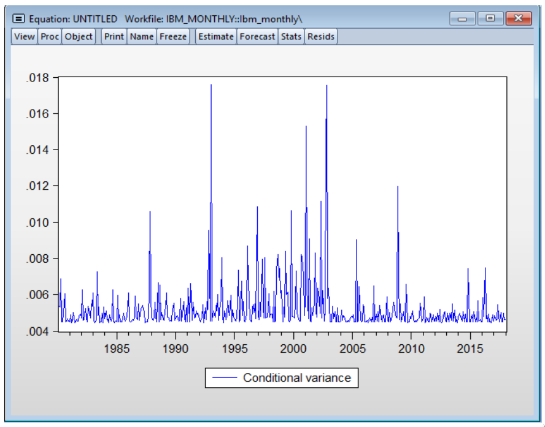
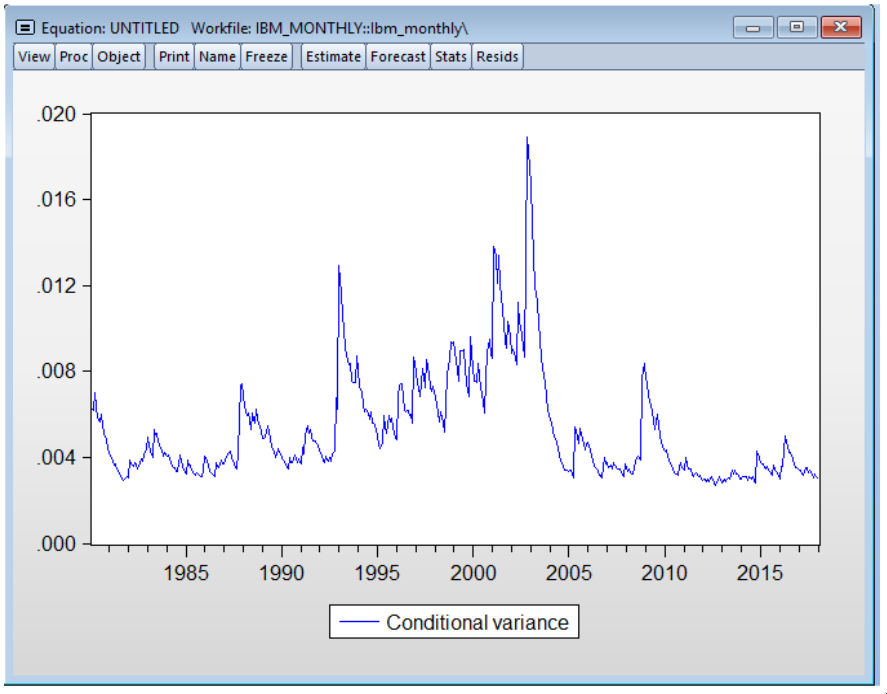
2.16.5 TODO GARCH models as a ARCH in squares
- We can rewrite this as a ARMA model
- How can we get requirements for stationarity from this form?
2.17 Lecture 17 - GARCH properties
2.17.1 GARCH predictions
Suppose we have estimated an AR(1) GARCH(1,1) model. How do we generate predictions from this?
To start, we can do a one-step ahead point estimate of the returns quite easily. In fact we only need to look at the mean model. Since GARCH models are just ARMA models in the squares, we can calculate forecasts in much the same way as the old mean models we have already looked at.
I've done some of these on paper, including looking at the long-run variance estimates (which approach the unconditional variance).
2.17.2 Comparison between ARCH and GARCH predictions
Empirically we tend to find that GARCH models produce tighter intervals around forecasts of future returns. We can see an example of this on Slide 91 where the following intervals are produced for a one step ahead forecast on IBM monthly returns.
\[ \begin{array}{rcl} \text{ARCH} &:& [-0.1292, 0.1437] \\ \text{GARCH} &:& [-0.0975, 0.1097] \\ \end{array} \]
In addition to the width of the intervals, we should also consider the density that each fitted model places on the realized return when evaluating them. For instance we can look at the forecasted probability that the return would be less than the realized return.
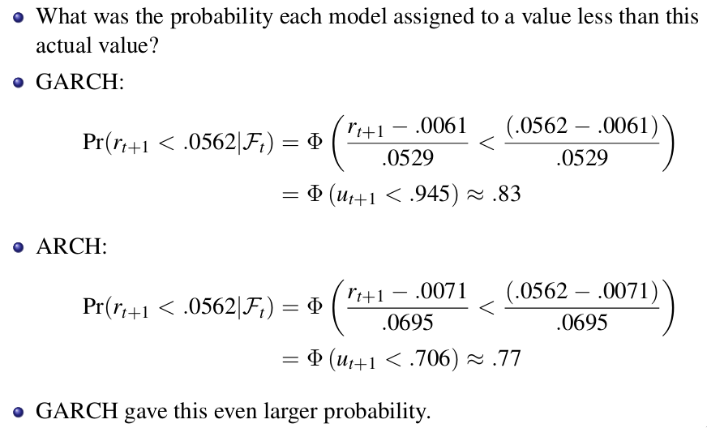
We can visualise the forecasted distributions like so.
library(tidyverse) library(reshape2) tibble(x = seq(-0.3, 0.3, length.out = 100), arch = dnorm(x, mean=0.0071, sd=0.0695), garch = dnorm(x, mean=0.0061, sd=0.0529)) %>% melt(id = c("x"), value.name = "density", variable.name = "model") %>% ggplot() + geom_line(aes(x=x, y=density, col=model)) + geom_vline(aes(xintercept=0.0562)) + ggtitle("ARCH vs GARCH forecast distributions", subtitle="IBM monthly returns for Feb 2018")
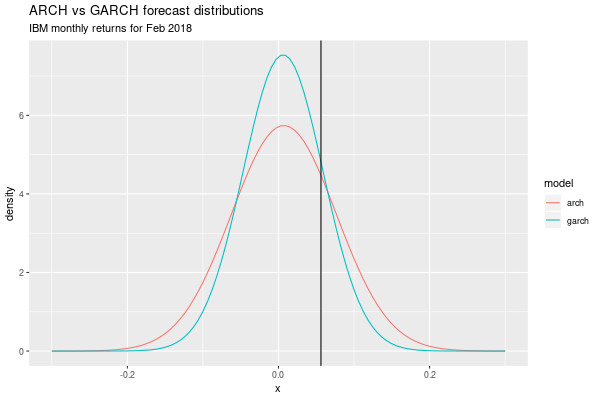
2.17.3 Likelihood ratio tests
As a GARCH(1,1) nests a ARCH(1) model (i.e. it is an extension of an ARCH(1)), we can use a likelihood ratio test in order to determine the statistical significance of the new parameters.
\[ \begin{array}{rcl} H_0 &:& \text{New parameters are insignificant} \\ H_1 &:& \text{New parameters are significant} \\ \end{array} \]
This is completed by:
- Calculating the likelihood \(LL(\hat{\theta}_G)\) of the GARCH model
- Calculating the likelihood \(LL(\hat{\theta}_A)\) of the ARCH model
- Calculating the test statistic \(LR = 2 (LL(\hat{\theta}_G) - LL(\hat{\theta}_A))\)
- Calculating the critical value \(C\) from a \(\chi^2_q\) model where \(q\) is the number of additional parameters
- Reject the null when \(LR > C\)
This testing process generalizes to other types of models also, not just ARCH / GARCH.
2.17.4 Testing for asymmetric volatility
Empirically we tend to observe stronger reactions to negative shocks in most assets than we do to positive shocks. This so called asymmetric volatility is a characteristisation of one of the stylzied facts we have seen (i.e. the negative tails in return distributions). There are many explanations for why this might occur, for instance the leverage effect or consumption smoothing.
We can test whether this may need to be accounted for in a particular return series by using LM tests on the residual series to see if we can explain them using features related to the direction of past shocks. Some examples are below
| Test name | Auxiliary regresion |
|---|---|
| General asymmetry test | \(\hat{u}_t^2 = \phi_0 + \phi_1 \mathbb{I}(\hat{\varepsilon}_{t-1} < 0) + v_t\) |
| Negative size test | \(\hat{u}_t^2 = \phi_0 + \phi_1 \mathbb{I}(\hat{\varepsilon}_{t-1} < 0) \hat{\varepsilon}_{t-1} + v_t\) |
| Positive size test | \(\hat{u}_t^2 = \phi_0 + \phi_1 \mathbb{I}(\hat{\varepsilon}_{t-1} > 0) \hat{\varepsilon}_{t-1} + v_t\) |
| Everything test | \(\hat{u}_t^2 = \phi_0 + \phi_1 \mathbb{I}(\hat{\varepsilon}_{t-1} < 0) + \phi_2 \mathbb{I}(\hat{\varepsilon}_{t-1} < 0) \hat{\varepsilon}_{t-1} + \phi_3 \mathbb{I}(\hat{\varepsilon}_{t-1} > 0) \hat{\varepsilon}_{t-1} + v_t\) |
For each of these, the test statistic is \(\chi^2_p\) where \(p\) is the number of regressors under \(H_0\) that the regressors are insignificant.
2.18 Lecture 18 - Asymmetric volatility
2.18.1 Asymmetric news impacts
LM test with auxiliary regression equation
\[ \hat{u}_t^2 = \phi_0 + \phi_1 I_{t-1}^- + \eta_t \]
or
\[ \hat{u}_t^2 = \phi_0 + \phi_1 I_{t-1}^+ + \eta_t \]
\(TR^2 \sim \chi_1^2\) under \(H_0: \phi_1 = 0\).
2.18.2 Size effect tests
- $ \hat{u}t2 = φ0 + φ1 It-1^- \hat{\varepsilon}t-1 + ηt $ (negative size test)
- If \(\phi_1 < 0\) then negative shocks raise volatility by more than positive shocks
- $ \hat{u}t2 = φ0 + φ1 It-1^+ \hat{\varepsilon}t-1 + ηt $ (positive size test)
- If \(\phi_1 < 0\) then positive shocks raise volatility by more than positive shocks
You may also test for a more complete auxiliary equation including the direction and size
\[ \hat{u}_t^2 = \phi_0 + \phi_1 I_{t-1}^- + \phi_2 I_{t-1}^+ \hat{\varepsilon}_{t-1} + \phi_3 I_{t-1}^- \hat{\varepsilon}_{t-1} + \eta_t \]
2.18.3 GJR-GARCH model
To model the skew in responses to negative shocks, we can add regressors into our variance model to allow for modelling of this behaviour. In a GJR-GARCH(p, o, q) model we add regressors \(o\) terms that are of the form \(\lambda_j \mathbb{I}(\hat{\varepsilon}_t < 0) \hat{\varepsilon}_t^2\). In ETC3460 we generally look at \(o=1\). The full model now looks like this for a GJR-GARCH(1,1,1) model (with constant mean).
\[ \begin{array}{rcl} r_t &=& \mu + \varepsilon_t \\ \varepsilon_t &=& \sigma_t u_t \\ \sigma^2_t &=& \alpha_0 + \alpha_1 \varepsilon_{t-1}^2 + \lambda (I_{t-1} \varepsilon_{t-1}^2) + \beta_1 \sigma_{t-1}^2 \\ I_{t-1} &=& 1 \text{ if } \varepsilon_{t-1} \leq 0 \text{ else } 0 \end{array} \]
Typically we observe \(\lambda > 0\) in stock markets.
Note this creates a "kink" around \(\varepsilon_{t-1} = 0\) on the NIC (since the new term is additive for negative shocks). Requires \(\alpha_0, \alpha_1, \beta_1 \geq 0\) and \(\lambda + \alpha_1 \geq 0\) to be valid (i.e. we require positive volatility).
2.18.4 PROGRESS TGARCH / TARCH model
Another way of expressing the magnitude of the move is using the absolute size of the move rather than the square.
\[ \begin{array}{rcl} r_t &=& \mu + \varepsilon_t \\ \varepsilon_t &=& \sigma_t u_t \\ \sigma_t &=& \alpha_0 + \alpha_1 | \varepsilon_{t-1} | + \lambda (I_{t-1} | \varepsilon_{t-1} |) + \beta_1 \sigma_{t-1} \\ I_{t-1} &=& 1 \text{ if } \varepsilon_{t-1} \leq 0 \text{ else } 0 \end{array} \]
This is like GJR-GARCH but in the volatility not the squared volatility (i.e. using absolute value instead of squares). This helps capture more heavily tailed data (e.g. for when not even the second moment doesn't exist in the data) (why?).
Requires \(\alpha_0, \alpha_1, \beta_1 \geq 0\) and \(\lambda + \alpha_1 \geq 0\) to be valid (i.e. we require positive volatility).
2.18.5 PROGRESS EGARCH
An EGARCH model smoothes out the kink seen in GJR-GARCH and TARCH models.
\[ \begin{array}{rcl} r_t &=& \mu + \varepsilon_t \\ \varepsilon_t &=& \sigma_t u_t \\ \ln \sigma^2_t &=& \alpha_0 + \alpha_1 ( | u_{t-1} | - \mathbb{E}[| u_{t-1} |]) + \gamma u_{t-1} + \beta_1 \ln \sigma^2_{t-1} \\ \end{array} \]
for \(u_t \overset{\text{i.i.d.}}{\sim} N(0,1)\), \(\mathbb{E}[| u_{t-1} |] = \sqrt{2/\pi}\). The difference between the absolute standardised shock and its expectation acts as a smoother around 0 shocks (whereas GJR-GARCH and TARCH models use an indicator function and therefore have a kink in the NIC around 0) (does it actually tho?).
2.18.6 Notes on the significance and forecasting of asymmetric volatility models
We can use likelihood ratio tests with GJR-GARCH and TGARCH models against GARCH since they are nested models. However, since EGARCH models the log volatility we cannot use likelihood ratio tests since it doesn't nest a GARCH.
Since asymmetric models look at the sign of past shocks (or some interpolation based on the sign of the shock) we cannot compute closed form forecasts or long run variance easily. Typically we instead use simulation and monte-carlo estimates to estimate distributions. This is particularly difficult for EGARCH where we model the log volatility.
2.18.7 Questions
What is an alpha-stable distribution?
Let \(X_1\) and \(X_2\) be i.i.d. RVs. \(X_1\) and \(X_2\) are said to be stable if and only if for any constants \(a, b, c > 0\) and \(d\) the linear combination \(aX_1 + bX_2\) is equal to \(cX +d\) for \(X\) that follows the same distribution as \(X_1\) and \(X_2\). We say that The distribution is strictly stable if \(d=0\). For example the normal distribution satisfies this property. Let \(X, X_1, X_2 \overset{\text{i.i.d.}}{\sim} \mathcal{N}(\mu, \sigma^2)\). Then
\[ aX_1 + bX_2 = \sqrt{a^2 + b^2} X_3 \]
Link to wikipedia page with more information here.
2.19 TODO Lecture 19 - Multivariate GARCH
2.19.1 TODO Volatility interplay between assets
- GARCH models look at the conditional volatility of a single asset
- However they are univariate, and therefore assume that the volatility in other assets is indepdent
- In practice this assumption breaks down
- Revisiting CAPM, this implies that \(\beta\) (i.e. the correlation between an asset and the market times the ratio in volatilities) is time-varying
- This ends up implying that for almost all return series we have time-varying variance, ARCH effects and non-constant covariance with the market
2.19.2 TODO Rolling covariance
library(tidyquant) library(PerformanceAnalytics) library(reshape2) data <- tq_get(x = c("AAPL", "MSFT")) data %>% select(symbol, date, adjusted) %>% dcast(date ~ symbol) -> data_wide data_xts <- xts(data_wide[,-1], data_wide$date) returns <- CalculateReturns(data_xts) chart.RollingCorrelation(returns$AAPL, returns$MSFT)

2.19.3 TODO Multivariate volatility modelling
2.19.4 TODO Contagion and non-parametric methods
2.20 TODO Lecture 20 -
2.21 Lecture 21 - Review lecture
3 Laboratories
3.1 Week 2 laboratory
3.1.1 Overview
In this tutorial we went through the process of accessing EViews through MOVE and working through some exercises on a dataset of the prices of NASDAQ.
After opening the time series we could create a variable holding the log returns using
log_ret = log(close/close(-1))
and storing the first lag in another variable by
log_ret_lag = log_ret(-1)
We then regressed the log returns on the first lag and a constant to generate a simple model to forecast ahead log returns
log_ret c log_ret_lag
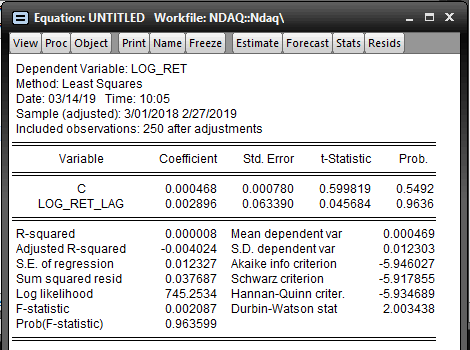
Alternatively we could use the AR(1) shortcut to generate the same model
log_ret c AR(1)
We also generated a number of models that average over the previous \(k\) values of the series. These are known as movement average models or MA(k) for short. We can estimate them in EViews like so.
mov3 = @movav(log_ret_lag, 3)
Popular choices may include MA(3), MA(5), MA(7) models however this is completely arbitrary. Lastly we went over the interpretation of some of the measures of fit for our forecats. The measures we covered in the lab included
| Measurement | Acronym | Formula |
|---|---|---|
| Root mean squared error | RMSE | \(\displaystyle \sqrt{\frac{1}{T} \sum_{i=1}^T (y_i - \hat{y}_i)^2 }\) |
| Mean absolute error | MAE | \(\displaystyle \frac{1}{T} \sum_{i=1}^T \mid y_i - \hat{y}_i \mid\) |
| Mean absolute percentage error | MAPE | \(\displaystyle \frac{100}{T} \sum_{i=1}^T \frac{\mid y_i - \hat{y}_i \mid}{y_i}\) |
| Mean absolute scaled error | MASE | \(\displaystyle \frac{1}{T} \sum_{i=1}^T \frac{y_i - \hat{y}_i}{\text{MAE}}\) |
| Theil coefficient |
For more detailed information on most of these accuracy measures, the accuracy section in FPP2 is quite useful. Finally here we can see a forecast evaluation summary from EViews
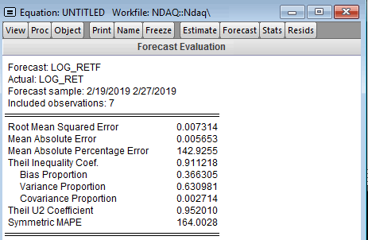
3.2 Week 3 laboratory
3.2.1 Overview
In this lab we use EViews to calculate raw and standardised moments of four different distributions. Following this we use the third and fourth standardised moments in a simple hypothesis test to test for normality.
3.2.2 Question one
Raw moments of a distribution can be calculated easily using @mean macro. For example to calculate the third raw moment of a series x, we can use the following snippet.
scalar raw_moment_3 = @mean(@pow(x, 3))
This is expected since the sample estimator for the third moment is simply
\[ \hat{\mu}_3 = \frac{1}{N} \sum_{i=1}^N x_i^3 \]
For standardised moments, we need to subtract by the mean and divide by the variance.
\[ \hat{\bar{\mu}}_3^s = \frac{1}{N} \sum_{i=1}^N \left ( \frac{x_i - \hat{\mu}_1}{\hat{\bar{\mu}}_2} \right ) ^3 \]
In EViews, this looks like
scalar stan_moment_3 = @mean(@pow((x-@mean(x))/@var(x), 3))
You can compare your answers with the descriptive statistics generated by EViews.
3.2.3 Question two
In this question we use a dataset with draws from three different distributions and conduct two hypothesis tests. Firstly, we are interested in whether the distributions have 0 mean. By central limit theorem we have that
\[ \bar{X} \sim \mathcal{N} \left ( \mu_X, \frac{\sigma^2}{n} \right ) \]
and by simple manipulation we have
\[ \frac{\sqrt{n}(\bar{X} - \mu_X)}{\sigma} \sim \mathcal{N}(0,1) \]
We can use this form to test the set of hypotheses
\[ \begin{array}{rcl} H_0 &:& \mu_X = 0 \\ H_1 &:& \mu_X \not= 0 \\ \end{array} \]
However we don't know the true value of \(\sigma\), only the sample variance \(s^2\). Therefore we test using the distribution
\[ \text{T-statistic} = \frac{\sqrt{n}(\bar{X} - 0)}{s} \sim t(n-1) \text{, under } H_0 \]
Meaning that we reject when the T-statistic is outside the middle 95% of the distribution (or equivalent for other confidence levels).
The second test we use is Jarque-Bera test for noramlity. We have established that normal distributions are parameterised entirely by their mean and variance while their skewness and excess kurtosis are 0. We can therefore form a simple hypothesis test to determine if we have evidence to discredit this in the sample we have drawn.
The test statistic for Jarque-Bera is
\[ \text{JB} = \frac{n}{6} \left ( (\hat{\bar{\mu}}_3^s - 0)^2 + \frac{(\hat{\bar{\mu}}_4^s-3)^2}{4} \right ) \]
and follows a \(\chi_2^2\) distribution under the null hypothesis of normality. In our case we found all three distributions were likely to be non-normal.
3.3 PROGRESS Week 4 laboratory
3.3.1 Question one
For the below, suppose \(r_t\) is the log returns for an asset and that \(r_t \overset{\text{i.i.d.}}{\sim} \mathcal{N}(\mu, \sigma^2)\).
What is the distribution of the 2-period return \(r_t(2) = r_t + r_{t-1}\)
This is the sum of two independent normals, therefore we have \(r_t(2) \sim \mathcal{N}(2\mu, 2\sigma^2)\)
Let \(\mu = 0.1\) and \(\sigma^2 = 0.6\). Find \(\mathbb{P}(r_t(2) < 2)\)
We can standardise the returns and reduce this to looking up the appropriate value in a standard normal distribution.
\[ \begin{array}{rcl} \mathbb{P}(r_t(2) < 2) &=& \displaystyle \mathbb{P}(\frac{r_t(2) - 2\mu}{\sqrt{2 \sigma^2}} < \frac{2 - 2\mu}{\sqrt{2 \sigma^2}}) \\ &=& \displaystyle \mathbb{P}(\frac{r_t(2) - 0.2}{1.095} < \frac{2 - 0.2}{1.095}) \\ &=& \displaystyle \mathbb{P}(Z < 1.643) \\ \end{array} \]
paste("The probability is", round(pnorm(1.643), 2))
The probability is 0.95
What is the covariance between \(r_2(2)\) and \(r_5(2)\)?
\[ \begin{array}{rcl} r_2(2) &=& r_2 + r_1 \\ r_5(2) &=& r_5 + r_4 \\ \text{Cov}(r_2(2), r_5(2)) &=& \text{Cov}(r_2 + r_1, r_5 + r_4) \\ &=& \text{Cov}(r_2, r_5 + r_4) + \text{Cov}(r_1, r_5 + r_4) \\ &=& \text{Cov}(r_2, r_5) + \text{Cov}(r_2, r_4) + \text{Cov}(r_1, r_5) + \text{Cov}(r_1, r_4) \\ &=& 0 \\ \end{array} \]
What is the distribution of \(r_t(2)\) given that \(r_{t-1} = 100\)?
\[ \begin{array}{rcl} r_t(2) &=& r_t + r_{t-1} \\ &=& r_t + 100 \\ &\sim& \mathcal{N}(\mu + 100, \sigma^2) \\ \end{array} \]
3.3.2 Question two
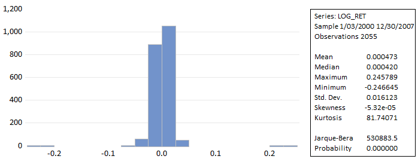
- The first standardised moment is always zero since we subtract the mean and don't raise it to any higher powers
- The second standardised moment is always one since we divide the second centralised moment by the variance (also the second centralised moment)
- The third standardised moment is skewness, in this case nearly zero
- The fourth standardised moment is kurtosis, in this case about 81, indicating much fatter tails than the normal
The distribution is likely not normal, the Jarque-Bera statistic (which has a \(\chi^2_1\) under \(H_0\) of normality) is enourmous. The test whether the mean of the return series is non-zero, we use the test statistic of
scalar t_stat = @sqrt(2055)*@mean(log_ret)/@sqrt(@var(log_ret))
which is t(2054) under the null, 1.329, giving a p-value of 0.184
2*(1 - pt(1.329, df=2054))
0.183995576442415
When we estimate the following model
\[ r_t = \mu + \rho r_{t-1} + \varepsilon_t \]
We obtain an estimate of \(\hat{\rho} \approx -0.244\). Using a T-test to determine the significance against zero we obtain a p-value of practically zero. Therefore we conclude that the average return is believed to be non-zero.
3.3.3 Question three
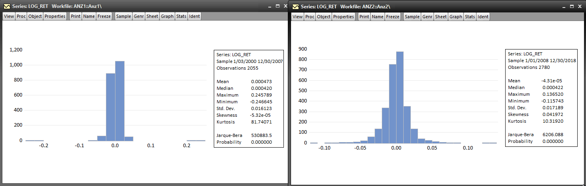
We now look at the returns for ANZ from 2008 to 2018. In the previous question we looked at the returns from 2000 to 2007. The kurtosis of the return distribution has dropped by a factor of 8. We now see slight positive skewness. We still reject the null hypothesis of normality by a wide margin. The dot com bubble was present across the first sample but since the 2008 equity volatility has been consistently low and markets have been quiet. This has led to fewer extreme events and lower kurtosis in the return series as a result compared to 2000 to 2007.
3.3.4 PROGRESS Question four
Done on paper, answers were also in group chat. Good exercise.
3.4 Week 5 laboratory
3.4.1 Question one
My new NBN internet connection has just died so I'm doing this tutorial in R. We first compute the monthly log returns for Microsoft and Walmart.
library(tidyverse) library(lubridate) rets <- read_csv("data/msft_wmt.csv", col_types=cols()) rets %>% mutate(msft_log_ret = log(MSFT) - log(lag(MSFT))) %>% mutate(wmt_log_ret = log(WMT) - log(lag(WMT))) %>% mutate(date = dmy(Date)) %>% na.omit() %>% select(date, msft_log_ret, wmt_log_ret) -> rets head(rets) %>% as.data.frame()
date msft_log_ret wmt_log_ret
1 1990-02-01 0.06538309 0.031748698
2 1990-03-01 0.11468355 0.071263020
3 1990-04-01 0.04631562 0.049042085
4 1990-05-01 0.23001599 0.127531059
5 1990-06-01 0.04027421 0.101138756
6 1990-07-01 -0.13353193 0.005994024
We then compute the covariance matrix of the returns
cov(as.matrix(rets[,c(2,3)])) -> cov_matrix cov_matrix
msft_log_ret wmt_log_ret
msft_log_ret 0.009625086 0.001987965
wmt_log_ret 0.001987965 0.004770311
From this we can compute the optimal weights for a two asset portfolio.
w1 <- (cov_matrix[1] - cov_matrix[2])/(cov_matrix[1] + cov_matrix[4] - 2*cov_matrix[2]) w2 <- 1 - w1 paste("The optimal weights are ", round(100*w1, 2), "% on MSFT and ", round(100*w2, 2), "% on WMT", sep="")
The optimal weights are 73.3% on MSFT and 26.7% on WMT
Alternatively we can come to these estimates using OLS rather than looking at the covariance matrix. We create the following series.
\[ \begin{array}{rcl} X_t &=& \text{MSFT}_t - \text{WMT}_t \\ Y_t &=& \text{MSFT}_t \\ \end{array} \]
and solve the linear regression problem
\[ Y_t = \alpha + \beta X_t + \varepsilon_t \]
library(broom) rets %>% mutate(X = msft_log_ret - wmt_log_ret) %>% mutate(Y = msft_log_ret) %>% select(X, Y) -> df model <- lm(Y ~ X, data=df) tidy(model) %>% as.data.frame()
term estimate std.error statistic p.value
1 (Intercept) 0.01138367 0.00412199 2.761694 6.200737e-03
2 X 0.73296654 0.04038423 18.149822 9.808939e-47
Here we see that the estimated coefficient \(\hat{\beta}_1 = w_1\). We can plot the residuals to look for any interesting patterns.
library(ggplot2) data.frame(date = rets$date, resid = model$residuals) %>% ggplot() + geom_line(aes(x=date, y=resid))
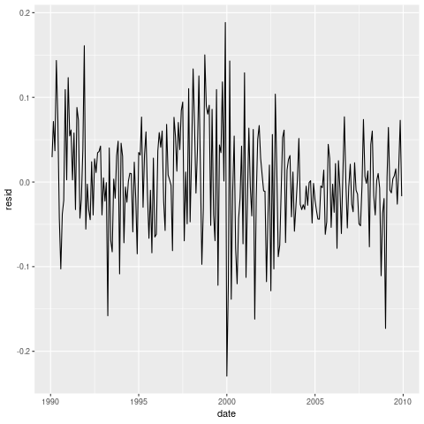
We can see some trending and time varying volatility. It's unlikely that these residuals satisfy the assumption of white noise. Either way, let's assume our estimates for the coefficients and associated standard errors are fine and conduct a hypothesis test about whether an equally weighted portfolio is suitable for these assets.
\[ \begin{array}{rcl} H_0 &:& \beta = \frac{1}{2} \\ H_1 &:& \beta \not= \frac{1}{2} \\ \end{array} \]
Our test statistic and critical value at the 1% level can be calculated in R.
test_statistic <- (coef(model)[2] - 0.5) / tidy(model)$std.error[2] critical_value <- qt(0.99, df = nrow(rets)-1-1) paste("The test statistic is", round(test_statistic, 2), "and the critical value is", round(critical_value, 2))
[1] "The test statistic is 5.77 and the critical value is 2.34"
Therefore we reject the null hypothesis and conclude an equally weighted portfolio would be suitable.
3.4.2 Question two
We will import some data on the risk free rate and excess returns on the market portfolio to combine with our returns for MSFT and WMT.
rf_mktrf <- read_csv("data/msft_wmt_rf_mktrf.csv", col_types=cols()) rf_mktrf %>% mutate(date = dmy(Date)) %>% rename(mkt_rf = `Mkt-RF`, rf = RF) %>% mutate(rf = rf/100, mkt_rf = mkt_rf/100) %>% select(date, mkt_rf, rf) %>% left_join(rets, by="date") %>% na.omit() %>% mutate(msft_excess = msft_log_ret - rf) %>% mutate(wmt_excess = wmt_log_ret - rf) %>% select(date, mkt_rf, msft_excess, wmt_excess) -> capm_df head(capm_df) %>% as.data.frame()
date mkt_rf msft_excess wmt_excess
1 1990-02-01 0.0111 0.05968309 0.0260486983
2 1990-03-01 0.0183 0.10828355 0.0648630200
3 1990-04-01 -0.0336 0.03941562 0.0421420851
4 1990-05-01 0.0842 0.22321599 0.1207310588
5 1990-06-01 -0.0109 0.03397421 0.0948387562
6 1990-07-01 -0.0190 -0.14033193 -0.0008059761
We will fit a single factor CAPM model to each of MSFT and WMT.
msft_capm <- lm(msft_excess ~ 1 + mkt_rf, data=capm_df) wmt_capm <- lm(wmt_excess ~ 1 + mkt_rf, data=capm_df) tidy(msft_capm) %>% as.data.frame() tidy(wmt_capm) %>% as.data.frame()
term estimate std.error statistic p.value
1 (Intercept) 0.00673088 0.005216442 1.29032 1.981970e-01
2 mkt_rf 1.27547755 0.117330865 10.87078 1.348746e-22
term estimate std.error statistic p.value
1 (Intercept) 0.003450597 0.00411977 0.8375704 4.031159e-01
2 mkt_rf 0.622044074 0.09266397 6.7129014 1.396180e-10
We can see that in both cases \(\alpha\) is insignificantly different from 0 at any reasonable significance level. We can also test whether \(\beta\) is likely to be different from 1.
critical_value <- qt(0.95, df = nrow(capm_df) - 2) msft_test_statistic <- abs((tidy(msft_capm)$estimate[2] - 1) / tidy(msft_capm)$std.error[2]) msft_tracks_market <- msft_test_statistic < critical_value paste("The test statistic is", round(msft_test_statistic, 2), "and the critical value is", round(critical_value, 2)) paste("Based on the evidence, does MSFT track the market?", msft_tracks_market) wmt_test_statistic <- abs((tidy(wmt_capm)$estimate[2] - 1) / tidy(wmt_capm)$std.error[2]) wmt_tracks_market <- wmt_test_statistic < critical_value paste("The test statistic is", round(wmt_test_statistic, 2), "and the critical value is", round(critical_value, 2)) paste("Based on the evidence, does WMT track the market?", wmt_tracks_market)
[1] "The test statistic is 2.35 and the critical value is 1.65" [1] "Based on the evidence, does MSFT track the market? FALSE" [1] "The test statistic is 4.08 and the critical value is 1.65" [1] "Based on the evidence, does WMT track the market? FALSE"
We see evidence that both stocks have betas greater or less than 1. That is, there is evidence that neither stock tracks the market and is either more or less volatile.
We omit residual tests.
3.5 TODO Week 6 laboratory
Generate excess return series
series other_excess = other - rf
Estimate 3 factor model
other_excess c mkt_rf smb hml momentum
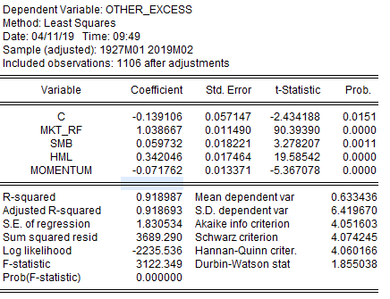
we can test if \(\alpha=0\) with a t-test, t(n-k) t(1101)
@qdist(0.975, 1101)
we reject the null and conclude alpha is nonzero
any hypothesis tests about the coefficients rely on assumptions holding, lets check the residuals
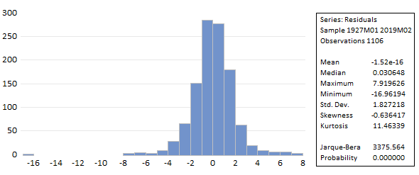
Looking at Jarque-Bera statistic, we reject the null hypothesis that the first four moments of the distribution are consistent with a normal.
we now test for heteroskedasticity using whites test
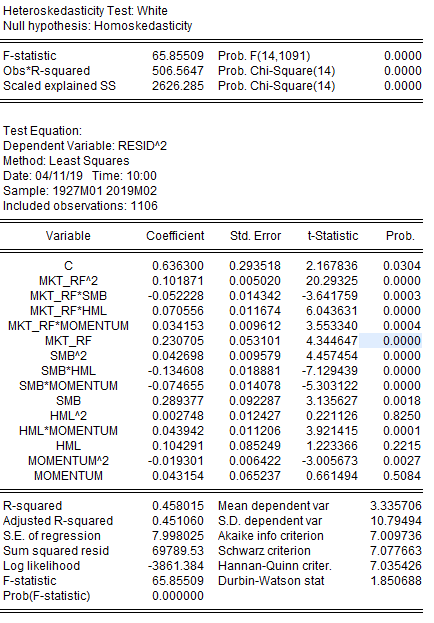
we reject the null and conclude that at least one of the coefficients is nonzero, indicating that we have heteroskedasticity present. the test statistic here is on the second line and has a \(\chi^2(14)\) distribution under the null
we should also test for serial correlation between the residuals
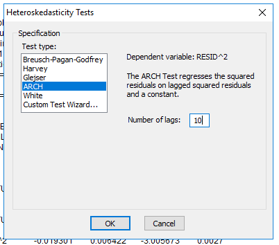
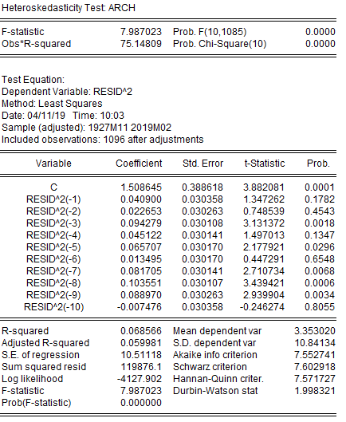
again the test statistic is \(TR^2\) on the second line, again we see that we reject the null hypothesis
@qchisq(0.95, 10)
- non-normal residuals isnt too bad bc we can go asymptotic
- heteroskedasticity and serial correlation is pretty bad and ruins the standard errors so our hypothesis tests are junk
we will redo our regression using robust standard errors
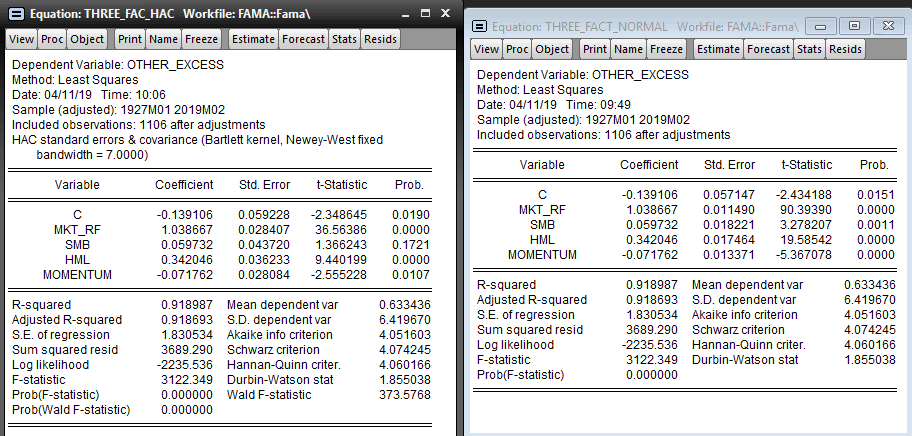
we now cannot reject the null that the coefficient on smb is statistically different from zero
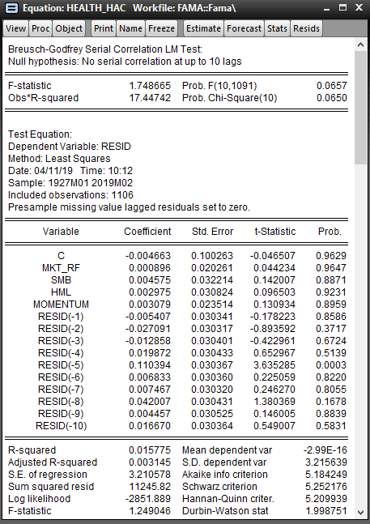
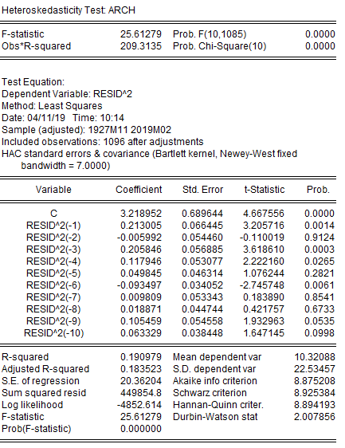
we cant predict if it's going up or down but we probably can predict if there is about to be a big move or the volatility of the series
lets look at the absolute values
series health_abs = @abs(hlth - @mean(hlth))
and we'll look at a correlogram on these absolute returns
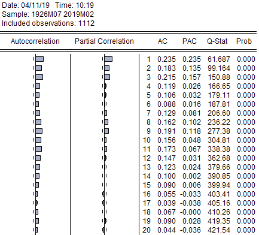
although we cannot predict the direction we tend to be able to predict the magnitude of returns
for the other portfolios, we summarise the results as follows
| Portfolio | Serial correlation | ARCH effects | Absoute returns persistent |
|---|---|---|---|
| Health | No (p=0.0650) | Yes (p=0.0000) | Yes (about first 5 lags) |
| Consumer | Yes (p=0.0014) | Yes (p=0.0000) | Yes (about first 10 lags) |
| Manufacturing | No (p=0.5550) | Yes (p=0.0000) | Yes (about first 15 lags) |
| Tech | Yes (p=0.0422) | Yes (p=0.0000) | Yes (about first 10 lags) |
| Other | No (p=0.0653) | Yes (p=0.0000) | Yes (about first 5 lags) |
3.6 PROGRESS Week 7 laboratory
3.6.1 Notes on choosing between AR and MA models
- If there looks like there are slowly decaying autocorrelation then prefer AR
- If there are a few fixed autocorrelations then nothing, prefer MA
- We require covariance stationarity to do anything useful
3.6.2 Question one
Let \(y_t\) be a MA(1) process
\[ y_t - \mu = \varepsilon_t - \theta \varepsilon_{t-1} \]
Show that \(\mathbb{E}[y_t] = \mu\)
\[ \begin{array}{rcl} \mathbb{E}[y_t] &=& \mathbb{E}[\mu + \varepsilon_t - \theta \varepsilon_{t-1}] \\ &=& \mathbb{E}[\mu] + \mathbb{E}[\varepsilon_t] - \theta \mathbb{E}[\varepsilon_{t-1}] \\ &=& \mu + 0 - 0 = \mu \text{ as } \varepsilon_t \overset{\text{i.i.d.}}{\sim} \text{WN}(0, \sigma^2) \\ \end{array} \]
Show that \(\mathbb{V}(y_t) = \sigma^2(1+\theta^2)\)
\[ \begin{array}{rcl} \mathbb{V}(y_t) &=& \mathbb{V}(\mu + \varepsilon_t - \theta \varepsilon_{t-1}) \\ &=& \mathbb{V}(\varepsilon_t - \theta \varepsilon_{t-1}) \\ &=& \mathbb{V}(\varepsilon_t) + \theta^2 \mathbb{V}(\varepsilon_{t-1}) \\ &=& \mathbb{V}(\varepsilon_t) + \theta^2 \mathbb{V}(\varepsilon_t) \text{ as } \varepsilon_t \overset{\text{i.i.d.}}{\sim} \text{WN}(0, \sigma^2) \\ &=& \sigma^2 + \theta^2 \sigma^2 \\ &=& \sigma^2 (1 + \theta^2) \\ \end{array} \]
Show that \(\gamma(1) = \text{Cov}(y_t, y_{t-1}) = - \theta \sigma^2\)
\[ \begin{array}{rcl} \gamma(1) &=& \text{Cov}(y_t, y_{t-1}) \\ &=& \mathbb{E}[y_t y_{t-1}] - \mathbb{E}[y_t] \mathbb{E}[y_{t-1}] \\ &=& \mathbb{E}[(\mu + \varepsilon_t - \theta \varepsilon_{t-1}) (\mu + \varepsilon_{t-1} - \theta \varepsilon_{t-2})] - \mu^2 \\ &=& \mathbb{E}[\mu^2 + \mu \varepsilon_{t-1} - \mu \theta \varepsilon_{t-2} + \varepsilon_t \mu + \varepsilon_t \varepsilon_{t-1} - \varepsilon_t \theta \varepsilon_{t-2} - \theta \varepsilon_{t-1} \mu - \theta \varepsilon_{t-1} \varepsilon_{t-1} + \theta^2 \varepsilon_{t-1} \varepsilon_{t-2}] - \mu^2 \\ &=& \mu^2 - \theta\mathbb{E}[\varepsilon_{t-1}^2] - \mu^2 \text{ as } \varepsilon_t \overset{\text{i.i.d.}}{\sim} \text{WN}(0, \sigma^2) \\ &=& - \theta\mathbb{E}[\varepsilon_{t-1}^2] \\ &=& - \theta \sigma^2 \\ \end{array} \]
Show that \(\gamma(h) = \text{Cov}(y_t, y_{t-h}) = 0\) when \(h>1\)
\[ \begin{array}{rcl} \gamma(h) &=& \text{Cov}(y_t, y_{t-h}) \\ &=& \mathbb{E}[y_t y_{t-h}] - \mathbb{E}[y_t] \mathbb{E}[y_{t-h}] \\ &=& \mathbb{E}[(\mu + \varepsilon_t - \theta \varepsilon_{t-1}) (\mu + \varepsilon_{t-h} - \theta \varepsilon_{t-h-1})] - \mu^2 \\ &=& \mathbb{E}[\mu^2 + \mu \varepsilon_{t-h} - \mu \theta \varepsilon_{t-h-1} + \varepsilon_t \mu + \varepsilon_t \varepsilon_{t-h} - \varepsilon_t \theta \varepsilon_{t-h-1} - \theta \varepsilon_{t-1} \mu - \theta \varepsilon_{t-1} \varepsilon_{t-h} + \theta^2 \varepsilon_{t-1} \varepsilon_{t-h-1}] - \mu^2 \\ &=& \mu^2 - \mu^2 \text{ as } \varepsilon_t \overset{\text{i.i.d.}}{\sim} \text{WN}(0, \sigma^2) \text{ so } \mathbb{E}[\varepsilon_i \varepsilon_j] = 0 \text{ when } i \not= j \\ &=& 0 \\ \end{array} \]
We note that since a MA(q) model will only have nonzero autocorrelation up to order q, we should see this pattern in our data for it to be a viable option for modelling. We will look at BHP returns to examine if an MA(1) or MA(2) model would be viable.
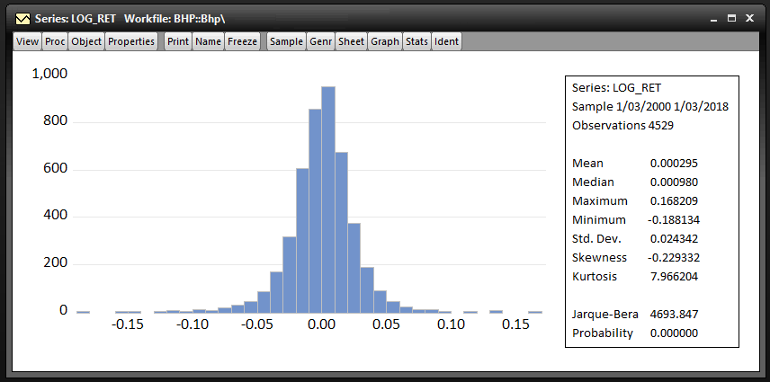
Looking at the distribution of returns, we note that they have excess kurtosis and some negative skewness. Jarque-Bera statistic rejects the null hypothesis of normality. In the correlogram we see
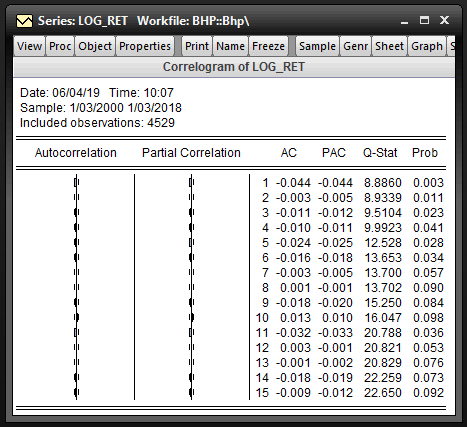
We estimate a MA(1) and a MA(2) model.
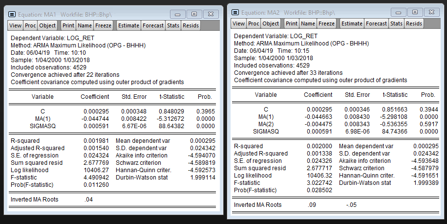
We can see that the second MA term is insignificant at any reasonable significance level (can test this using a T-test).
3.6.3 PROGRESS Question two
Let \(y_t\) be a ARMA(1,1) process
\[ y_t - \mu = \phi_1 y_{t-1} + \varepsilon_t - \theta \varepsilon_{t-1} \]
Find \(\mathbb{E}[y_t]\)
Did this on paper, too much algebra to type up
\[ \mathbb{E}[y_t] = \frac{\mu}{1 - \phi_1} \]
Find \(\mathbb{V}(y_t)\)
Did this on paper, too much algebra to type up
\[ \mathbb{V}(y_t) = \frac{\sigma^2 (1 + \theta^2 + 2 \phi_1)}{1 - \phi_1^2} \]
Find \(\gamma(1) = \mathbb{E}[y_t y_{t-1}] - \mathbb{E}[y_t] \mathbb{E}[y_{t-1}]\)
Very messy, didn't quite get through this one
3.7 TODO Week 8 laboratory
3.7.1 TODO Question One
- log likelihood much higher for daily returns
- The daily returns seem to have fit better
- Using 20 lags ARCH effects are present in both models
- go to estimate tab, change estimation setting to use arch with order 2 arch and order 0 garch
- there's still autocorrelation present in both return series for arch(2) errors
- same process as before
- with arch(5) monthly returns no longer have arch effects but still present for daily returns, same with arch(7)
- need more arch terms for daily
- more patterns in daily data compared to monthly data
3.7.2 TODO Question Two
This is mostly covered in W8L1
3.8 Week 9 laboratory
3.8.1 Question one
Using the excess returns on the consumer portfolio, we willl fit a three factor CAPM with a constant variance model, ARCH(1) errors and ARCH(5) errors.
| Model | Significant lags in correl | Serial correlation | ARCH effects (order 5) | Log likelihood |
|---|---|---|---|---|
| CAPM | 2 | Yes | Yes | -2133.642 |
| CAPM with ARCH(1) errors | 2 | Yes | -2091.202 | |
| CAPM with ARCH(5) errors | 1 | No | -2042.194 |
When using OLS regression, R2 is a useful measure of fit but loses interpretation for ARCH and GARCH models which use gradient optimizers to maximise likelihood. To decide between the ARCH(1) an ARCH(5) models, we can use a LR test. The test statistic is
\[ LR = 2 (-2042 + 2091) \approx 98 \]
Since we are testing four restrictions (i.e. whether the second to fourth order ARCH terms are needed), \(LR \sim \chi^2_4\).
paste("The critical value is", round(qchisq(0.99, df=4), 2))
The critical value is 13.28
The critical value for the 1% level is 13.28. Therefore we reject the null hypothesis at the 1% level. ARCH(1) errors are insufficient for the three factor CAPM on the consumer portfolio.
We can repeat this process with the hi-tech portfolio.
| Model | Significant lags in correl | Serial correlation | ARCH effects (order 5) | Log likelihood |
|---|---|---|---|---|
| CAPM | 0 | Yes | Yes | -2578.488 |
| CAPM with ARCH(1) errors | 0 | Yes | -2545.059 | |
| CAPM with ARCH(5) errors | 1 | No | -2516.701 |
\[ LR = 2 (-2516.701 + 2545.059) \approx 56 \]
ARCH(5) is preferred to ARCH(1) again. We note that \(\alpha\) is insignificantly different from 0 in this portfolio on all three models, while for the consumer portfolio we saw strong evidence that \(\alpha > 0\).
3.8.2 Diagnostic tests
- Diagnostics for mean value model (IS there ARCH effects in the model)
- Run mean model (constant mean, ARMA …)
- estimate \(\hat{\varepsilon}_t^2 = \gamma_0 + \gamma_1 \hat{\varepsilon}_{t-1}^2 + ... + v_t\)
- using LM test with \(TR^2\) from auxiliary regression
- Diagnostic test for ARCH/GARCH model (Is there left over ARCH effects)
- Estimate mean model (constant mean, ARMA, CAPM) and volatility model
- The residuals \(\varepsilon_t\) are in the form \(\varepsilon_t = u_t \sigma_t\)
- We can specify the distribution of \(u_t\) (often this is simply a conditional normal assumption given \(\mathcal{F})\)
- We estimate the auxiliary regression \(\hat{u}_t^2 = \gamma_0 + \gamma_1 \hat{u}_{t-1}^2 + ... + v_t\)
- Intuition: we test the standardised residuals because assume that we perfectly fit the volatility with ARCH, then if we test the residuals we still get noisy arch effects but if we scale them with what we predicted volatility to be we get constant mean and variance.
3.9 Week 10 laboratory
3.9.1 Question one
We estimate a three-factor CAPM model on consumer returns from 1926/7 to 2019/2. We use one model with ARCH(2) errors and another with GARCH(1,1) errors.
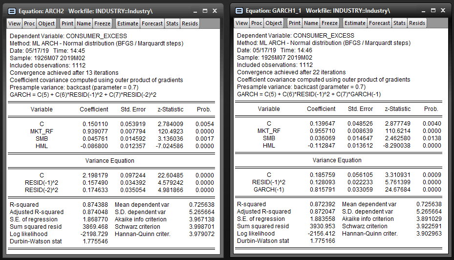
We cannot complete a likelihood ratio rest between these two models since they are not nested models (i.e. neither model is a direct extension of the other). The AIC value for the model with ARCH(2) errors (\(k=7\), \(l=-2198.729\), \(T=1112\)) is 3.967. The AIC for the model with GARCH(1,1) errors (\(k=7\), \(l=-2156.412\), \(T=1112\)) is 3.891. Based on this criteria, the GARCH(1,1) model is preferred.
Next we estimate a model with EGARCH(1,1) errors.
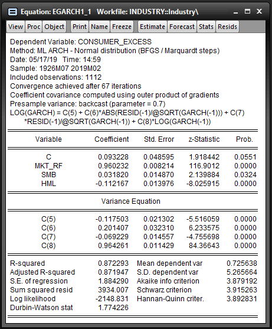
The model with EGARCH(1,1) errors (\(k=8\), \(l=-2148.831\), \(T=1112\)) has an AIC of 3.879. Despite the extra degree of freedom, based on AIC the EGARCH(1,1) model is preferable to the GARCH(1,1) and ARCH(2) models.
3.9.2 Question two
In this question we generate returns sampled from a GARCH(1,1) process. In EViews we can use a program to simulate the process for us.
genr ut = nrnd scalar n = 1112 scalar alpha0 = 0.01 scalar alpha1 = 0.05 scalar beta = 0.9 series sigmaSq = alpha0 / (1 - alpha1 - beta) series r = @sqrt(sigmaSq) * ut for !i=1 to n-1 smpl @first+!i @first+!i sigmaSq = alpha0 + alpha1*r(-1)^2 + beta*sigmaSq(-1) r = @sqrt(sigmaSq) * ut next smpl @all
Running this generates a series sigmaSq for the volatility and r for the returns. Sure enough, fitting a GARCH(1, 1) model to r closely recovers the true coefficients of the process.
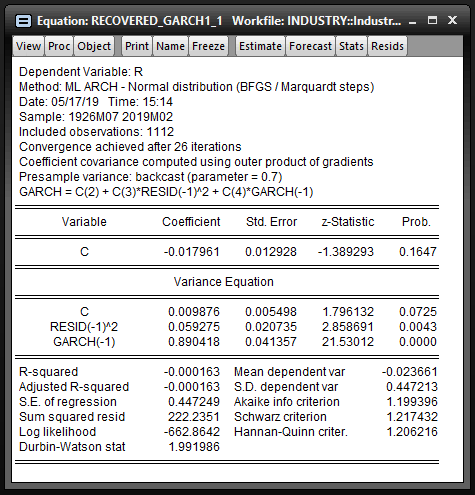
The correlogram shows very little autocorrelation in the returns (i.e. that the return series is not persistent).
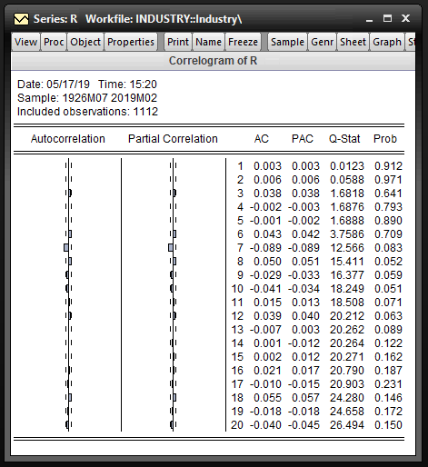
In the sample generated we see slight positive skew in the returns and kurtosis of nearly 3. The Jarque-Bera test fails to reject the null hypothesis of normality at a 10% confidence level.
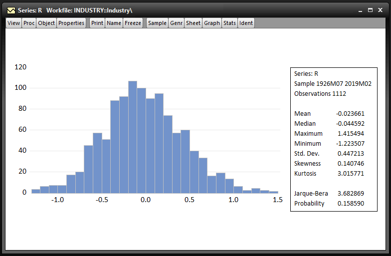
Repeating this process with longer return series (e.g. \(n=25000\)) generates a series with 0 skewness and greater excess kurtosis (about 3.12) and the Jarque-Bera test rejects the null hypothesis of normality.
3.9.3 Question three
In this question we simulate a TGARCH(1,1) process. This is done in much the same way as the previous question.
genr ut = nrnd scalar n = 25000 scalar alpha0 = 0.00003 scalar alpha1 = 0.05 scalar alpha2 = 0.05 scalar beta = 0.83 series sigmaSq = alpha0 / (1 - (alpha1 + alpha2/2) - beta) series r = @sqrt(sigmaSq) * ut for !i=1 to n-1 smpl @first+!i @first+!i sigmaSq = alpha0 + alpha1*@abs(r(-1)) + alpha2*@recode(r(-1)<0, 1, 0)*@abs(r(-1)) + beta*sigmaSq(-1) r = @sqrt(sigmaSq) * ut next smpl @all
A sample of 25000 periods drawn from this process shows a slight positive skew and kurtosis of about 3.4.
3.10 Week 11 laboratory
3.10.1 Question one
The sample mean can be calculated as follows.
\[ \mu = \frac{1}{T} \sum_{t=1}^T r_t \]
The sample variance can be calculated as follows.
\[ \bar{\mu}_2 = \frac{1}{T} \sum_{t=1}^T (r_t - \mu)^2 \]
The sample skewness can be calculated as follows.
\[ \bar{\mu}_3^s = \frac{1}{T} \sum_{t=1}^T \frac{(r_t - \mu)^3}{\bar{\mu}_2} \]
The sample kurtosis can be calculated as follows.
\[ \bar{\mu}_4^s = \frac{1}{T} \sum_{t=1}^T \frac{(r_t - \mu)^4}{\bar{\mu}_2} \]
3.10.2 Question two
Under the null hypothesis that the data follows a normal distribution, the population skewness is equal to 0 and the population kurtosis is equal to 3.
\[ \begin{array}{rcl} H_0 &:& SK = 0 \text{ and } KT = 3 \\ H_1 &:& \text{Either } SK \neq 0 \text{ or } KT \neq 3 \\ \end{array} \]
Under the null hypothesis the \(JB\) test statistic follows a chi-squared distribution with two degrees of freedom. Therefore the critical value at a 95% significance level is 5.99. We reject the null hypothesis when \(JB > 5.99\) and fail to reject when \(JB \leq 5.99\).
3.10.3 Question three
Let \(X = (X_1, X_2)^{\prime}\) be a bivariate normal random vector
\[ X = \begin{bmatrix} X_1 \\ X_2 \end{bmatrix} \sim \mathcal{N} \left (\begin{bmatrix} \mu_1 \\ \mu_2 \end{bmatrix} , \begin{bmatrix} \sigma_1^2 & \sigma_{12} \\ \sigma_{21} & \sigma_2^2 \\ \end{bmatrix} \right ) \]
The conditional distribution of \(X_1\) given \(X_2\) is as follows
\[ X_1 | X_2 = x_2 \sim \mathcal{N} \left ( \mu_1 + \frac{\sigma_{12}}{\sigma_2^2}(x_2 - \mu_2), \frac{\sigma_1^2 \sigma_2^2 - \sigma_{12}^2}{\sigma_2^2} \right ) \]
3.10.4 Question four
What is the distribution of the \(k\) period log return \(r_t(k)\)?
Since the log returns across all periods are i.i.d., we have the sum of \(k\) indepdent normals with identical distributions. It follows then that
\[ r_t(k) \sim \mathcal{N}(k \mu, k \sigma^2) \]
What is the distribution of the gross return \(1 + R_t\)?
Recall that \(r_t = \log(1+R_t)\). Since \(r_t \sim \mathcal{N}(\mu, \sigma^2)\) we can write
\[ r_t = \mu + \sigma Z \]
for \(Z \sim \mathcal{N}(0,1)\). Therefore
\[ 1 + R_t = exp(\mu + \sigma Z) \sim \text{lognormal}(\mu, \sigma^2) \]
Derive the formula for probability \(\mathbb{P}(1 + R_t < x)\)
\[ \begin{array}{rcl} \mathbb{P}(1 + R_t < x) &=& \mathbb{P}(\log(1 + R_t) < \log(x)) \\ &=& \mathbb{P}(r_t < \log(x)) \\ &=& \displaystyle \mathbb{P}\left ( \frac{r_t - \mu}{\sigma} < \frac{\log(x) - \mu}{\sigma} \right) \\ &=& \displaystyle \mathbb{P}\left ( Z < \frac{\log(x) - \mu}{\sigma} \right) \\ &=& \displaystyle \Theta \left (\frac{\log(x) - \mu}{\sigma} \right) \\ \end{array} \]
3.10.5 Question five
State the procedure for testing the validity of a single factor CAPM
- Estimate the single-factor CAPM
- Construct the following auxiliary regression equation to test the following set of hypotheses
\[ \hat{\varepsilon}_{it} = \beta_2 \text{SMB}_t + \beta_3 \text{HML}_t + v_{it} \]
\[ \begin{array}{rcl} H_0 &:& \beta_2 = \beta_3 = 0 \text{, the single factor CAPM is valid} \\ H_1 &:& \text{At least one of } \beta_2, \beta_3 \text{ is non-zero, the single factor CAPM is invalid} \\ \end{array} \]
- Obtain the \(R^2\) and calculate the test statistic \(TR^2\) which has a \(\chi^2_2\) distribution under \(H_0\)
- Calculate the critical value at an appropriate level and conduct the test
Using an LM test, set out a testing procedure to test the following null hypothesis
\[ \begin{array}{rcl} H_0 &:& \text{The errors are homoskedastic} \\ H_1 &:& \text{The errors are heteroskedastic} \\ \end{array} \]
Use an LM test with the following auxiliary regression equation
\[ \hat{\varepsilon}_{it} = c + \gamma_1 (r_{mt} - r_{ft}) + \gamma_2 (r_{mt} - r_{ft})^2 + \beta_3 \text{SMB}_t + \beta_4 \text{SMB}_t^2 + \beta_5 \text{HML}_t + \beta_6 \text{HML}_t^2 + v_{it} \]
\[ \begin{array}{rcl} H_0 &:& \gamma_1 = \cdots = \gamma_6 = 0 \\ H_1 &:& \text{At least one of } \gamma_1, \ldots, \gamma_6 \text{ is nonzero} \\ \end{array} \]
This is commonly known as White's test. Under \(H_0\), \(TR^2 \sim \chi^2_6\).
Using an LM test, set out a testing procedure to test the following null hypothesis
\[ \begin{array}{rcl} H_0 &:& \text{There are no ARCH effects} \\ H_1 &:& \text{There are ARCH effects} \\ \end{array} \]
Use an LM test with the following auxiliary regression equation
\[ \hat{\varepsilon}_{it} = c + \gamma_1 \hat{\varepsilon}_{i, t-1} + \gamma_2 \hat{\varepsilon}_{i, t-2} + \gamma_3 \hat{\varepsilon}_{i, t-3} + \gamma_4 \hat{\varepsilon}_{i, t-4} + \gamma_5 \hat{\varepsilon}_{i, t-5} + v_{it} \]
\[ \begin{array}{rcl} H_0 &:& \gamma_1 = \cdots = \gamma_5 = 0 \\ H_1 &:& \text{At least one of } \gamma_1, \ldots, \gamma_5 \text{ is nonzero} \\ \end{array} \]
Under \(H_0\), \(TR^2 \sim \chi^2_5\). This tests for ARCH effects up to order 5.
3.10.6 TODO Question five (extra)
3.10.7 Question six
What assumptions about the error term \(\varepsilon_t\) are requried for the efficient market hypothesis (EMH) to be satisfied?
Suppose we have the model of returns \(r_t\) as follows \[ r_t = \mathbb{E}[r_t | \mathcal{F}_{t-1}] + \varepsilon_t \]
We require \(\varepsilon_t \sim \text{WN}(0, \sigma^2_{\varepsilon})\), i.e. that we have zero mean, constant variance and no autocorrelation in the residual series.
If the EMH is satisfied, what does this mean about the predictability of returns?
Conditional on all past information, future returns are completely random and therefore unpredictable. We cannot do better than expecting the conditional mean and variance.
State the steps necessary to test the EMH using \(\rho(1)\)
Under the null hypothesis of EMH, we should expect that the correlation between the current return and the return 1 period ago should be zero. Therefore we can test the hypothesis that \(\rho(1)=0\) against the alternative that \(\rho(1)\not=0\). Under \(H_0\), \(\rho(1) \sim \mathcal{N}(0, 1/T)\) so our test statistic for a two sided T test is \(abs(\sqrt{T}\hat{\rho}(1))\). A rejection implies that returns are predictable over that given time period and that the EMH is invalidated.
State the steps necessary to test the EMH using an auxiliary regression of the residuals
We can construct a more comprehensive test to determine whether any lags are found to be significant predictors of future returns. To test up to order \(k\) we construct the auxiliary regression equation
\[ \hat{\varepsilon}_t = \gamma_0 + \sum_{l=1}^k \gamma_l \hat{\varepsilon}_{t-l} + v_t \]
This is an LM test with the following hypotheses
\[ \begin{array}{rcl} H_0 &:& \gamma_1 = \cdots = \gamma_k = 0 \text{, EMH is satisfied} \\ H_1 &:& \text{At least one of } \gamma_1, \ldots, \gamma_k \text{is non-zero, EMH is not satisfied} \\ \end{array} \]
This has a test statistic of \(TR^2 \sim \chi^2_k\) under \(H_0\).
If we reject EMH, how can we improve the model?
We can model the dynamics of returns by using more complicated mean models such as \(\text{AR}(p)\) or \(\text{ARMA}(p, q)\) models.
3.10.8 Question seven
Derive the unconditional expectation of \(r_t\), an AR(1) process.
\[ \begin{array}{rcl} \mathbb{E}[r_t] &=& \mathbb{E}[\phi_0 + \phi_1 r_{t-1} + \varepsilon_t] \\ &=& \mathbb{E}[\phi_0] + \mathbb{E}[\phi_1 r_{t-1}] + \mathbb{E}[\varepsilon_t] \\ &=& \phi_0 + \phi_1 \mathbb{E}[r_{t-1}] + 0 \\ &=& \phi_0 + \phi_1 \mathbb{E}[r_t] \text{, assuming that } r_t \text{ is covariance stationary} \\ \mathbb{E}[r_t] - \phi_1 \mathbb{E}[r_t] &=& \phi_0 \\ \therefore \mathbb{E}[r_t] &=& \displaystyle \frac{\phi_0}{1 - \phi_1} \\ \end{array} \]
Derive the unconditional variance of \(r_t\), an AR(1) process.
\[ \begin{array}{rcl} \mathbb{V}(r_t) &=& \mathbb{V}(\phi_0 + \phi_1 r_{t-1} + \varepsilon_t) \\ &=& \mathbb{V}(\phi_1 r_{t-1} + \varepsilon_t) \\ &=& \phi_1^2 \mathbb{V}(r_{t-1}) + \mathbb{V}(\varepsilon_t) + 2\phi_1 \text{Cov}(r_{t-1}, \varepsilon_t) \\ &=& \phi_1^2 \mathbb{V}(r_{t-1}) + \sigma^2 + 0 \text{, as } \varepsilon_t \sim \text{WN}(0, \sigma^2) \\ &=& \phi_1^2 \mathbb{V}(r_t) + \sigma^2 \text{, assuming that } r_t \text{ is covariance stationary} \\ \therefore \mathbb{V}(r_t) &=& \displaystyle \frac{\sigma^2}{1 - \phi_1^2} \\ \end{array} \]
Derive the unconditional correlation between \(r_t\) and \(r_{t-1}\) where \(r_t\) is an AR(1) process
Recall that
\[ \text{Corr}(r_t, r_{t-1}) = \frac{\text{Cov}(r_t, r_{t-1})} {\sqrt{ \mathbb{V}(r_t) \mathbb{V}(r_{t-1}) } } \]
We first derive the covariance
\[ \begin{array}{rcl} \text{Cov}(r_t, r_{t-1}) &=& \text{Cov}(\phi_0 + \phi_1 r_{t-1} + \varepsilon_t, r_{t-1}) \\ &=& \text{Cov}(\phi_0, r_{t-1}) + \text{Cov}(\phi_1 r_{t-1}, r_{t-1}) + \text{Cov}(\varepsilon_t, r_{t-1}) \\ &=& 0 + \text{Cov}(\phi_1 r_{t-1}, r_{t-1}) + 0 \\ &=& \phi_1 \mathbb{V}(r_{t-1}) \\ &=& \phi_1 \mathbb{V}(r_t) \text{, assuming that } r_t \text{ is covariance stationary} \\ \end{array} \]
But then we also have \(\mathbb{V}(r_t) = \mathbb{V}(r_{t-1})\) when \(r_t\) is covariance stationary, therefore
\[ \begin{array}{rcl} \text{Corr}(r_t, r_{t-1}) &=& \displaystyle \frac{\text{Cov}(r_t, r_{t-1})} {\sqrt{ \mathbb{V}(r_t) \mathbb{V}(r_{t-1}) } } \\ &=& \displaystyle \frac{\phi_1 \mathbb{V}(r_t)} {\sqrt{ \mathbb{V}(r_t) \mathbb{V}(r_t) } } \\ \therefore \text{Corr}(r_t, r_{t-1}) &=& \phi_1 \\ \end{array} \]